| Pakiet | flashx.textLayout.container |
| Klasa | public class ContainerController |
| Dziedziczenie | ContainerController |
| Implementuje | IInteractionEventHandler, ITextLayoutFormat, ISandboxSupport |
| Wersja języka: | ActionScript 3.0 |
| Wersje środowiska wykonawczego: | Flash Player 10, AIR 1.5 |

Powiązane elementy interfejsu API
flashx.textLayout.elements.TextFlow
flash.text.engine.TextLine
 Ukryj dziedziczone właściwości publiczne
Ukryj dziedziczone właściwości publiczne Pokaż dziedziczone właściwości publiczne
Pokaż dziedziczone właściwości publiczne| Właściwość | Zdefiniowane przez | ||
|---|---|---|---|
| absoluteStart : int [tylko do odczytu]
Zwraca pierwszy znak do kontenera. | ContainerController | ||
| alignmentBaseline : *
TextLayoutFormat: określa linię bazową, do której wyrównywana jest dominująca linia bazowa. | ContainerController | ||
| backgroundAlpha : *
TextLayoutFormat: wartość alfa (przezroczystość) dla tła (jeśli przekazana kaskadowo wartość nie jest zdefiniowana, przyjmowana jest wartość domyślna). | ContainerController | ||
| backgroundColor : *
TextLayoutFormat: kolor tła tekstu (jeśli zostanie przekazana kaskadowo wartość undefined, przyjmowana jest wartość domyślna). | ContainerController | ||
| baselineShift : *
TextLayoutFormat: przesunięcie linii bazowej względem wartości dominantBaseline. | ContainerController | ||
| blockProgression : *
TextLayoutFormat: określa pionowy lub poziomy przyrost położenia przy rozmieszczaniu wierszy. | ContainerController | ||
| breakOpportunity : *
TextLayoutFormat: steruje miejscem dozwolonego podziału wierszy przy zawijaniu tekstu. | ContainerController | ||
| cffHinting : *
TextLayoutFormat: typ przyciągania CFF użyty dla tego tekstu. | ContainerController | ||
| clearFloats : *
TextLayoutFormat: Steruje sposobem zawijania tekstu wokół obiektu ruchomego. | ContainerController | ||
| color : *
TextLayoutFormat: kolor tekstu. | ContainerController | ||
| columnCount : *
TextLayoutFormat: liczba kolumn tekstu (jeśli kaskadowo zostanie przekazana wartość undefined, przyjmowana jest wartość domyślna). | ContainerController | ||
| columnGap : *
TextLayoutFormat: określa odstęp między kolumnami w pikselach (jeśli przekazana kaskadowo wartość jest równa undefined, przyjmowana jest wartość domyślna). | ContainerController | ||
| columnState : ColumnState [tylko do odczytu]
Zwraca obiekt ColumnState, który opisuje liczbę i charakterystyki kolumn w kontenerze. | ContainerController | ||
| columnWidth : *
TextLayoutFormat: szerokość kolumny w pikselach (jeśli przekazana kaskadowo wartość jest równa undefined, przyjmowana jest wartość domyślna). | ContainerController | ||
| compositionHeight : Number [tylko do odczytu]
Zwraca zakres pionowy dozwolony dla tekstu w kontenerze. | ContainerController | ||
| compositionWidth : Number [tylko do odczytu]
Zwraca zakres poziomy dozwolony dla tekstu w kontenerze. | ContainerController | ||
| computedFormat : flashx.textLayout.formats:ITextLayoutFormat [tylko do odczytu]
Zwraca instancję ITextLayoutFormat z atrybutami zastosowanymi do danego kontenera, łącznie z atrybutami odziedziczonymi z elementu głównego. | ContainerController | ||
 | constructor : Object
Odwołanie do obiektu klasy lub funkcji konstruktora, dotyczące danej instancji obiektu. | Object | |
| container : Sprite [tylko do odczytu]
Zwraca obiekt ekranowy kontenera, który zawiera wiersze tekstu dla danego wystąpienia klasy ContainerController. | ContainerController | ||
| containerControllerInitialFormat : flashx.textLayout.formats:ITextLayoutFormat [statyczny] | ContainerController | ||
| coreStyles : Object [tylko do odczytu] Zwraca obiekt coreStyles dla klasy ContainerController. | ContainerController | ||
| digitCase : *
TextLayoutFormat: sposób różnicowania wielkości cyfr w tekście. | ContainerController | ||
| digitWidth : *
TextLayoutFormat: Szerokość cyfr stosowana w tym tekście. | ContainerController | ||
| direction : *
TextLayoutFormat: określa domyślny dwukierunkowy poziom osadzenia tekstu w bloku tekstu. | ContainerController | ||
| dominantBaseline : *
TextLayoutFormat: określa, która linia bazowa elementów jest przyciągana do linii alignmentBaseline w celu ustalenia pionowego położenia elementu w wierszu. | ContainerController | ||
| firstBaselineOffset : *
TextLayoutFormat: określa położenie linii bazowej dla pierwszego wiersza w kontenerze. | ContainerController | ||
| flowComposer : IFlowComposer [tylko do odczytu]
Zwraca obiekt układacza przepływu, który układa i podświetla tekst w kontenerze, którym zarządza kontroler. | ContainerController | ||
| fontFamily : *
TextLayoutFormat: nazwa użytej czcionki lub lista nazw czcionek oddzielonych od siebie przecinkami. | ContainerController | ||
| fontLookup : *
TextLayoutFormat: sposób wyszukiwania czcionek. | ContainerController | ||
| fontSize : *
TextLayoutFormat: rozmiar tekstu w pikselach. | ContainerController | ||
| fontStyle : *
TextLayoutFormat: styl tekstu. | ContainerController | ||
| fontWeight : *
TextLayoutFormat: grubość tekstu. | ContainerController | ||
| format : flashx.textLayout.formats:ITextLayoutFormat
Zawiera obiekt ITextLayoutFormat, który zawiera atrybuty dla danego kontenera. | ContainerController | ||
| horizontalScrollPolicy : String
Określa strategię przewijania w poziomie, którą można ustawić poprzez przypisanie jednej ze stałych klasy ScrollPolicy: ON, OFF lub AUTO. | ContainerController | ||
| horizontalScrollPosition : Number Określa aktualne miejsce przewijania w poziomie na stole montażowym. | ContainerController | ||
| interactionManager : ISelectionManager [tylko do odczytu]
Obiekt InteractionManager skojarzony z obiektem TextFlow. | ContainerController | ||
| justificationRule : *
TextLayoutFormat: reguła justowania tekstu w akapicie. | ContainerController | ||
| justificationStyle : *
TextLayoutFormat: styl justowania akapitu. | ContainerController | ||
| kerning : *
TextLayoutFormat: kerning dopasowuje piksele pomiędzy określonymi parami znaków w celu poprawienia czytelności. | ContainerController | ||
| leadingModel : *
TextLayoutFormat: określa model interlinii, czyli ustawienia podstawy i kierunku interlinii. | ContainerController | ||
| ligatureLevel : *
TextLayoutFormat: określa, które z ligatur zdefiniowanych w czcionce mogą być używane w tekście. | ContainerController | ||
| lineBreak : *
TextLayoutFormat: steruje podziałem wyrazów między wiersze w kontenerze (jeśli wartość przekazana kaskadowo jest równa undefined, przyjmowana jest wartość domyślna). | ContainerController | ||
| lineHeight : *
TextLayoutFormat: specyfikacja interlinii tekstu. | ContainerController | ||
| lineThrough : *
TextLayoutFormat: wartość true powoduje zastosowanie przekreślenia, czyli linii biegnącej przez środek wiersza tekstu. | ContainerController | ||
| linkActiveFormat : *
TextLayoutFormat: Definiuje atrybuty formatujące używane dla łączy w stanie normalnym. | ContainerController | ||
| linkHoverFormat : *
TextLayoutFormat: Definiuje atrybuty formatowania używane dla łączy w stanie wskazywania, gdy wskaźnik myszy znajduje się w obrębie obwiedni łącza (nasuwanie kursora). | ContainerController | ||
| linkNormalFormat : *
TextLayoutFormat: Definiuje atrybuty formatujące używane dla łączy w stanie normalnym. | ContainerController | ||
| listAutoPadding : *
TextLayoutFormat: Określa automatyczne wcięcie dla krawędzi początkowych list w przypadkach, gdy wartość dopełnienia listy po danej stronie wynosi auto. | ContainerController | ||
| listMarkerFormat : *
TextLayoutFormat: Definiuje znaczniki formatowania list atrybutów. | ContainerController | ||
| listStylePosition : *
TextLayoutFormat: Wartości dozwolone: ListStylePosition.INSIDE, ListStylePosition.OUTSIDE, FormatValue.INHERIT. Wartość domyślna (undefined) oznacza, że właściwość nie jest ustawiona. Jeśli zostanie przekazana kaskadowo wartość undefined, ta właściwość odziedziczy wartość z obiektu macierzystego. | ContainerController | ||
| listStyleType : *
TextLayoutFormat: Wartości dozwolone: ListStyleType.UPPER_ALPHA, ListStyleType.LOWER_ALPHA, ListStyleType.UPPER_ROMAN, ListStyleType.LOWER_ROMAN, ListStyleType.NONE, ListStyleType.DISC, ListStyleType.CIRCLE, ListStyleType.SQUARE, ListStyleType.BOX, ListStyleType.CHECK, ListStyleType.DIAMOND, ListStyleType.HYPHEN, ListStyleType.ARABIC_INDIC, ListStyleType.BENGALI, ListStyleType.DECIMAL, ListStyleType.DECIMAL_LEADING_ZERO, ListStyleType.DEVANAGARI, ListStyleType.GUJARATI, ListStyleType.GURMUKHI, ListStyleType.KANNADA, ListStyleType.PERSIAN, ListStyleType.THAI, ListStyleType.URDU, ListStyleType.CJK_EARTHLY_BRANCH, ListStyleType.CJK_HEAVENLY_STEM, ListStyleType.HANGUL, ListStyleType.HANGUL_CONSTANT, ListStyleType.HIRAGANA, ListStyleType.HIRAGANA_IROHA, ListStyleType.KATAKANA, ListStyleType.KATAKANA_IROHA, ListStyleType.LOWER_ALPHA, ListStyleType.LOWER_GREEK, ListStyleType.LOWER_LATIN, ListStyleType.UPPER_ALPHA, ListStyleType.UPPER_GREEK, ListStyleType.UPPER_LATIN, FormatValue.INHERIT. Wartość domyślna (undefined) oznacza, że właściwość nie jest ustawiona. Jeśli zostanie przekazana kaskadowo wartość undefined, ta właściwość odziedziczy wartość z obiektu macierzystego. | ContainerController | ||
| locale : *
TextLayoutFormat: ustawienia narodowe tekstu. | ContainerController | ||
| paddingBottom : *
TextLayoutFormat: Wstawka dolna w pikselach. | ContainerController | ||
| paddingLeft : *
TextLayoutFormat: Lewa wstawka w pikselach. | ContainerController | ||
| paddingRight : *
TextLayoutFormat: Prawa wstawka w pikselach. | ContainerController | ||
| paddingTop : *
TextLayoutFormat: Górna wstawka w pikselach. | ContainerController | ||
| paragraphEndIndent : *
TextLayoutFormat: liczba określająca (w pikselach) wielkość wcięcia końcowej krawędzi akapitu. | ContainerController | ||
| paragraphSpaceAfter : *
TextLayoutFormat: liczba, która określa w pikselach ilość miejsca, jaką należy pozostawić za akapitem. | ContainerController | ||
| paragraphSpaceBefore : *
TextLayoutFormat: liczba, która określa w pikselach ilość miejsca, jaką należy pozostawić przed akapitem. | ContainerController | ||
| paragraphStartIndent : *
TextLayoutFormat: liczba określająca (w pikselach) wielkość wcięcia początkowej krawędzi akapitu. | ContainerController | ||
| renderingMode : *
TextLayoutFormat: tryb renderowania używany dla tego tekstu. | ContainerController | ||
| rootElement : ContainerFormattedElement [tylko do odczytu]
Zwraca element główny, jaki występuje w kontenerze. | ContainerController | ||
| styleName : *
TextLayoutFormat: Przypisuje klasę identyfikującą do elementu, umożliwiając ustawienie stylu dla elementu za pomocą odniesienia do właściwości styleName. | ContainerController | ||
| styles : Object [tylko do odczytu] Zwraca właściwość styles tego obiektu ContainerController. | ContainerController | ||
| tabStops : *
TextLayoutFormat: określa znaczniki tabulacji skojarzone z akapitem. | ContainerController | ||
| textAlign : *
TextLayoutFormat: wyrównanie wierszy akapitu względem kontenera. | ContainerController | ||
| textAlignLast : *
TextLayoutFormat: wyrównanie ostatniego (lub jedynego) wiersza tekstu justowanego w akapicie względem kontenera. | ContainerController | ||
| textAlpha : *
TextLayoutFormat: wartość Alfa (przezroczystość) dla tekstu. | ContainerController | ||
| textDecoration : *
TextLayoutFormat: dekoracja tekstu. | ContainerController | ||
| textFlow : flashx.textLayout.elements:TextFlow [tylko do odczytu]
Zwraca obiekt TextFlow, którego treść jest widoczna w kontenerze. | ContainerController | ||
| textIndent : *
TextLayoutFormat: liczba określająca w pikselach wcięcie pierwszego wiersza akapitu. | ContainerController | ||
| textJustify : *
TextLayoutFormat: określa opcje justowania tekstu. | ContainerController | ||
| textLength : int [tylko do odczytu] Zwraca łączną liczbę znaków w kontenerze. | ContainerController | ||
| textRotation : *
TextLayoutFormat: kąt obrotu tego tekstu w stopniach. | ContainerController | ||
| trackingLeft : *
TextLayoutFormat: liczba pikseli (lub procent wartości fontSize, np. 120%) wskazująca ilość światła (kerning ręczny) do zastosowania po lewej stronie każdego znaku. | ContainerController | ||
| trackingRight : *
TextLayoutFormat: liczba pikseli (lub procent wartości fontSize, np. 120%) wskazująca ilość światła (kerning ręczny) do zastosowania po prawej stronie każdego znaku. | ContainerController | ||
| typographicCase : *
TextLayoutFormat: sposób różnicowania wielkości liter w tekście. | ContainerController | ||
| userStyles : Object Umożliwia odczytywanie i zapisywanie stylów użytkownika w obiekcie ContainerController. | ContainerController | ||
| verticalAlign : *
TextLayoutFormat: wyrównanie pionowe lub justowanie (jeśli wartość przekazana kaskadowo jest równa undefined, przyjmowana jest wartość domyślna). | ContainerController | ||
| verticalScrollPolicy : String Określa strategię przewijania w pionie, którą można ustawić przez przypisanie jednej ze stałych klasy ScrollPolicy: ON, OFF lub AUTO. | ContainerController | ||
| verticalScrollPosition : Number Określa aktualne miejsce przewijania w pionie na stole montażowym. | ContainerController | ||
| whiteSpaceCollapse : *
TextLayoutFormat: powoduje usuwanie albo zachowywanie białych znaków podczas importowania tekstu do obiektu TextFlow. | ContainerController | ||
| wordSpacing : *
TextLayoutFormat: Określa optymalny, minimalny i maksymalny odstęp między wyrazami (jako mnożnik szerokości normalnego odstępu) obowiązujący przy justowaniu. | ContainerController | ||
| Metoda | Zdefiniowane przez | ||
|---|---|---|---|
ContainerController(container:Sprite, compositionWidth:Number = 100, compositionHeight:Number = 100)
Konstruktor — tworzy instancję klasy ContainerController. | ContainerController | ||
Przetwarza zdarzenie Event.ACTIVATE, gdy klient zarządza zdarzeniami. | ContainerController | ||
Obsługa zdarzenia przewijania podczas zaznaczania z przeciąganiem. | ContainerController | ||
Wywoływana, aby zażądać od klientów rozpoczęcia przekazywania zdarzeń zwolnienia przycisku myszy i przemieszczania myszy spoza obszaru izolowanego. | ContainerController | ||
Usuwa styl określony przez parametr styleProp z danego elementu FlowElement. | ContainerController | ||
Przetwarza zdarzenie Event.DEACTIVATE, gdy klient zarządza zdarzeniami. | ContainerController | ||
Przetwarza zdarzenie edycji (CUT, COPY, PASTE, SELECT_ALL), gdy klient zarządza zdarzeniami. | ContainerController | ||
Wywoływana, aby poinformować klientów, że przekazywanie zdarzeń zwolnienia przycisku myszy i przemieszczania myszy spoza obszaru izolowanego nie jest już potrzebne. | ContainerController | ||
Przetwarza zdarzenia FocusEvent.KEY_FOCUS_CHANGE i FocusEvent.MOUSE_FOCUS_CHANGE, gdy klient zarządza zdarzeniami. | ContainerController | ||
Przetwarza zdarzenie FocusEvent.FOCUS_IN, gdy klient zarządza zdarzeniami. | ContainerController | ||
Przetwarza zdarzenie FocusEvent.FOCUS_OUT, gdy klient zarządza zdarzeniami. | ContainerController | ||
Zwraca obszar, jaki zajmuje tekst po ostatniej operacji układania lub aktualizowania. | ContainerController | ||
Określenie odległości przewijania wymaganej w celu przewinięcia w dół lub w górę o określoną liczbę wierszy. | ContainerController | ||
Zwraca wartość stylu określonego przez parametr styleProp. | ContainerController | ||
|
Wskazuje, czy dla obiektu zdefiniowano określoną właściwość. | Object | |
Przetwarza zdarzenie IMEEvent.IME_START_COMPOSITION, gdy klient zarządza zdarzeniami. | ContainerController | ||
Oznacza cały tekst w kontenerze jako wymagający ułożenia. | ContainerController | ||
Określa, czy kontener zawiera tekst, który wymaga ułożenia. | ContainerController | ||
|
Wskazuje, czy instancja klasy Object należy do łańcucha prototypów obiektu określonego jako parametr. | Object | |
Przetwarza zdarzenie KeyboardEvent.KEY_DOWN, gdy klient zarządza zdarzeniami. | ContainerController | ||
Przetwarza zdarzenie FocusEvent.KEY_FOCUS_CHANGE, gdy klient zarządza zdarzeniami. | ContainerController | ||
Przetwarza zdarzenie KeyboardEvent.KEY_UP, gdy klient zarządza zdarzeniami. | ContainerController | ||
Przetwarza zdarzenie ContextMenuEvent.MENU_SELECT, gdy klient zarządza zdarzeniami. | ContainerController | ||
Przetwarza zdarzenie MouseEvent.DOUBLE_CLICK, gdy klient zarządza zdarzeniami. | ContainerController | ||
Przetwarza zdarzenie MouseEvent.MOUSE_DOWN, gdy klient zarządza zdarzeniami. | ContainerController | ||
Przetwarza zdarzenie MouseEvent.MOUSE_MOVE, gdy klient zarządza zdarzeniami. | ContainerController | ||
Wywołanie klienckie nakazujące przekazanie zdarzenia mouseMove spoza obszaru izolowanego. | ContainerController | ||
Przetwarza zdarzenie MouseEvent.MOUSE_OUT, gdy klient zarządza zdarzeniami. | ContainerController | ||
Przetwarza zdarzenie MouseEvent.MOUSE_OVER, gdy klient zarządza zdarzeniami. | ContainerController | ||
Przetwarza zdarzenie MouseEvent.MOUSE_UP, gdy klient zarządza zdarzeniami. | ContainerController | ||
Wywołanie klienckie nakazujące przekazanie zdarzenia mouseUp spoza obszaru izolowanego. | ContainerController | ||
Przetwarza zdarzenie MouseEvent.MOUSE_WHEEL, gdy klient zarządza zdarzeniami. | ContainerController | ||
|
Wskazuje, czy określona właściwość istnieje i jest przeliczalna. | Object | |
Przewija tekst w taki sposób, aby określony zakres był widoczny w kontenerze. | ContainerController | ||
Ustawia zakres zaznaczonego tekstu w składniku implementującym interfejs ITextSupport. | ContainerController | ||
Ustawia szerokość i wysokość dozwolone dla tekstu w kontenerze. | ContainerController | ||
|
Ustawia dostępność właściwości dynamicznej używanej w pętlach. | Object | |
Ustawia wartość stylu określonego przez parametr styleProp na wartość określoną przez parametr newValue. | ContainerController | ||
Przetwarza zdarzenie SoftKeyboardEvent.SOFT_KEYBOARD_ACTIVATING, gdy klient zarządza zdarzeniami. | ContainerController | ||
Przetwarza zdarzenie TextEvent.TEXT_INPUT, gdy klient zarządza zdarzeniami. | ContainerController | ||
|
Zwraca ciąg reprezentujący obiekt — sformatowany zgodnie z konwencjami właściwymi dla ustawień regionalnych. | Object | |
|
Zwraca ciąg reprezentujący określony obiekt. | Object | |
|
Zwraca pierwotną wartość dla określonego obiektu. | Object | |
| Metoda | Zdefiniowane przez | ||
|---|---|---|---|
Dodaje obiekt flash.display.Shape, na którym rysowane są kształty tła (np. kolor tła). | ContainerController | ||
addInlineGraphicElement(parent:DisplayObjectContainer, inlineGraphicElement:DisplayObject, index:int):void
Dodaje obiekt flash.display.DisplayObject jako obiekt potomny obiektu macierzystego. | ContainerController | ||
Dodaje obiekt flash.display.DisplayObjectContainer, do którego są dodawane kształty zaznaczenia (takie jak wyróżnienie zaznaczenia bloku, kursor itd.) . | ContainerController | ||
Dodaje obiekt flash.text.engine.TextLine jako obiekt podrzędny kontenera. | ContainerController | ||
Tworzy menu kontekstowe dla kontrolera ContainerController. | ContainerController | ||
Pobiera indeks, w którym musi pojawiać się pierwszy wiersz tekstu w obiekcie nadrzędnym. | ContainerController | ||
Usuwa obiekt flash.display.Shape, na którym są rysowane kształty tła (takie jak kolor tła). | ContainerController | ||
Usuwa obiekt flash.display.DisplayObject z jego obiektu macierzystego. | ContainerController | ||
Usuwa obiekt flash.display.DisplayObjectContainer, który zawiera kształty zaznaczenia (takie jak wyróżnienie zaznaczenia bloku, kursor itd.). | ContainerController | ||
Usuwa obiekt flash.text.engine.TextLine z jego obiektu nadrzędnego. | ContainerController | ||
W przypadku przewijania ustawia prostokąt przewijania na prostokąt kontenera, dzięki czemu wiersze widoczne w połowie zostają przycięte do regionu przewijalnego. | ContainerController | ||
_mouseWheelListenerAttached | właściwość |
tlf_internal var _mouseWheelListenerAttached:Boolean = falseabsoluteStart | właściwość |
absoluteStart:int [tylko do odczytu] | Wersja języka: | ActionScript 3.0 |
| Wersje środowiska wykonawczego: | Flash Player 10, AIR 1.5 |
Zwraca pierwszy znak do kontenera. Jeśli nie jest to pierwszy kontener w przepływie, ta wartość jest aktualizowana podczas układania tekstu, tj. po wywołaniu metod compose() lub updateAllControllers() klasy IFlowComposer.
Implementacja
public function get absoluteStart():intPowiązane elementy interfejsu API
alignmentBaseline | właściwość |
alignmentBaseline:*| Wersja języka: | ActionScript 3.0 |
| Wersje środowiska wykonawczego: | Flash Player 10, AIR 1.5 |
TextLayoutFormat: określa linię bazową, do której wyrównywana jest dominująca linia bazowa. Na przykład, jeśli właściwość dominantBaseline zostanie ustawiona na wartość ASCENT, ustawienie właściwości alignmentBaseline na DESCENT powoduje wyrównanie górnej krawędzi tekstu z linią bazową DESCENT lub umieszczenie jej pod tą linią. Największy element w wierszu zwykle określa linie bazowe.

Wartości dozwolone: TextBaseline.ROMAN, TextBaseline.ASCENT, TextBaseline.DESCENT, TextBaseline.IDEOGRAPHIC_TOP, TextBaseline.IDEOGRAPHIC_CENTER, TextBaseline.IDEOGRAPHIC_BOTTOM, TextBaseline.USE_DOMINANT_BASELINE, FormatValue.INHERIT.
Wartość domyślna, undefined, oznacza, że właściwość nie jest ustawiona.
Jeśli wartość undefined zostanie przekazana kaskadowo, właściwość odziedziczy wartość z obiektu nadrzędnego. Jeśli ta właściwość nie będzie ustawiona w żadnym obiekcie macierzystym, przyjęta zostanie wartość TextBaseline.USE_DOMINANT_BASELINE.
Implementacja
public function get alignmentBaseline():* public function set alignmentBaseline(value:any):voidZgłasza
RangeError — Gdy ustawiona wartość nie mieści się w zakresie dozwolonym dla tej właściwości.
|
Powiązane elementy interfejsu API
backgroundAlpha | właściwość |
backgroundAlpha:*| Wersja języka: | ActionScript 3.0 |
| Wersje środowiska wykonawczego: | Flash Player 10, AIR 1.5 |
TextLayoutFormat: wartość alfa (przezroczystość) dla tła (jeśli przekazana kaskadowo wartość nie jest zdefiniowana, przyjmowana jest wartość domyślna). Wartość 0 określa całkowitą przezroczystość, a wartość 1 określa całkowitą nieprzezroczystość. Obiekty wyświetlane z wartością alpha ustawioną na 0 są aktywne, mimo iż są niewidoczne.
Wartości dozwolone to liczby od 0 do 1 oraz FormatValue.INHERIT.
Wartość domyślna, undefined, oznacza, że właściwość nie jest ustawiona.
Jeśli przekazana kaskadowo właściwość będzie miała wartość undefined, zostanie przyjęta wartość 1.
Implementacja
public function get backgroundAlpha():* public function set backgroundAlpha(value:any):voidZgłasza
RangeError — Gdy ustawiona wartość nie mieści się w zakresie dozwolonym dla tej właściwości.
|
backgroundColor | właściwość |
backgroundColor:*| Wersja języka: | ActionScript 3.0 |
| Wersje środowiska wykonawczego: | Flash Player 10, AIR 1.5 |
TextLayoutFormat: kolor tła tekstu (jeśli zostanie przekazana kaskadowo wartość undefined, przyjmowana jest wartość domyślna). Może być wartością stałą BackgroundColor.TRANSPARENT lub wartością szesnastkową, która określa trzy 8-bitowe wartości RGB (czerwony, zielony, niebieski); na przykład 0xFF0000 to kolor czerwony, a 0x00FF00 to kolor zielony.
Wartości dozwolone to ciągi BackgroundColor.TRANSPARENT i FormatValue.INHERIT oraz liczby całkowite bez znaku od 0x0 do 0xffffffff.
Wartość domyślna, undefined, oznacza, że właściwość nie jest ustawiona.
Jeśli przekazana kaskadowo właściwość będzie miała wartość undefined, ta właściwość przyjmie wartość BackgroundColor.TRANSPARENT.
Implementacja
public function get backgroundColor():* public function set backgroundColor(value:any):voidZgłasza
RangeError — Gdy ustawiona wartość nie mieści się w zakresie dozwolonym dla tej właściwości.
|
Powiązane elementy interfejsu API
baselineShift | właściwość |
baselineShift:*| Wersja języka: | ActionScript 3.0 |
| Wersje środowiska wykonawczego: | Flash Player 10, AIR 1.5 |
TextLayoutFormat: przesunięcie linii bazowej względem wartości dominantBaseline. Jednostką są piksele lub odsetek wartości fontSize (w tym drugim przypadku należy podać ciąg znaków, np. 140%). Wartości dodatnie powodują przesunięcie w górę dla tekstu poziomego (w prawo dla pionowego), a wartości ujemne powodują przesunięcie w dół dla tekstu poziomego (w lewo dla pionowego).
Wartości dozwolone: BaselineShift.SUPERSCRIPT, BaselineShift.SUBSCRIPT, FormatValue.INHERIT.
Poprawne wartości liczbowe należą do zakresu od -1000 do 1000.
Dozwolone wartości procentowe należą do zakresu od -1000 do 1000.
Wartość domyślna, undefined, oznacza, że właściwość nie jest ustawiona.
Jeśli wartość undefined zostanie przekazana kaskadowo, właściwość odziedziczy wartość z obiektu nadrzędnego. Jeśli w żadnym obiekcie nadrzędnym ta właściwość nie będzie ustawiona, przyjęta zostanie wartość 0.0.
Implementacja
public function get baselineShift():* public function set baselineShift(value:any):voidZgłasza
RangeError — Gdy ustawiona wartość nie mieści się w zakresie dozwolonym dla tej właściwości.
|
Powiązane elementy interfejsu API
blockProgression | właściwość |
blockProgression:*| Wersja języka: | ActionScript 3.0 |
| Wersje środowiska wykonawczego: | Flash Player 10, AIR 1.5 |
TextLayoutFormat: określa pionowy lub poziomy przyrost położenia przy rozmieszczaniu wierszy. Wiersze są rozmieszczane od góry do dołu (BlockProgression.TB — dla tekstu poziomego) lub z prawej na lewą (BlockProgression.RL — dla tekstu pionowego).
Wartości dozwolone: BlockProgression.RL, BlockProgression.TB, FormatValue.INHERIT.
Wartość domyślna, undefined, oznacza, że właściwość nie jest ustawiona.
Jeśli wartość undefined zostanie przekazana kaskadowo, właściwość odziedziczy wartość z obiektu nadrzędnego. Jeśli ta właściwość nie będzie ustawiona w żadnym obiekcie macierzystym, przyjęta zostanie wartość BlockProgression.TB.
Implementacja
public function get blockProgression():* public function set blockProgression(value:any):voidZgłasza
RangeError — Gdy ustawiona wartość nie mieści się w zakresie dozwolonym dla tej właściwości.
|
Powiązane elementy interfejsu API
breakOpportunity | właściwość |
breakOpportunity:*| Wersja języka: | ActionScript 3.0 |
| Wersje środowiska wykonawczego: | Flash Player 10, AIR 1.5 |
TextLayoutFormat: steruje miejscem dozwolonego podziału wierszy przy zawijaniu tekstu. Wartość BreakOpportunity.AUTO powoduje normalne dzielenie tekstu na wiersze. Wartość BreakOpportunity.NONE powoduje, że tekst nie jest dzielony, chyba że doszłoby do przekroczenia wymiaru i nie ma innych możliwych miejsc podziału wiersza. Wartość BreakOpportunity.ANY zezwala teraz na dzielenie wierszy w dowolnych miejscach, nie tylko między wyrazami. Wartość BreakOpportunity.ALL powoduje, że każdy klaster typograficzny będzie umieszczany w osobnym wierszu (jest to użyteczne przy umieszczaniu tekstu na ścieżce).
Wartości dozwolone: BreakOpportunity.ALL, BreakOpportunity.ANY, BreakOpportunity.AUTO, BreakOpportunity.NONE, FormatValue.INHERIT.
Wartość domyślna, undefined, oznacza, że właściwość nie jest ustawiona.
Jeśli wartość undefined zostanie przekazana kaskadowo, właściwość odziedziczy wartość z obiektu nadrzędnego. Jeśli ta właściwość nie będzie ustawiona w żadnym obiekcie macierzystym, przyjęta zostanie wartość BreakOpportunity.AUTO.
Implementacja
public function get breakOpportunity():* public function set breakOpportunity(value:any):voidZgłasza
RangeError — Gdy ustawiona wartość nie mieści się w zakresie dozwolonym dla tej właściwości.
|
Powiązane elementy interfejsu API
cffHinting | właściwość |
cffHinting:*| Wersja języka: | ActionScript 3.0 |
| Wersje środowiska wykonawczego: | Flash Player 10, AIR 1.5 |
TextLayoutFormat: typ przyciągania CFF użyty dla tego tekstu. Typ przyciągania CFF określa, czy środowisko wykonawcze Flash wymusza dopasowanie grubych kresek poziomych do siatki pikseli. Ta właściwość ma zastosowanie tylko wówczas, gdy właściwość renderingMode jest ustawiona na RenderingMode.CFF, a czcionka jest osadzona (właściwość fontLookup jest ustawiona na FontLookup.EMBEDDED_CFF). Przyciąganie pozwala na uzyskanie wyraźnego tekstu czytelnego dla ludzi także przy niskich rozdzielczościach.
Wartości dozwolone: CFFHinting.NONE, CFFHinting.HORIZONTAL_STEM, FormatValue.INHERIT.
Wartość domyślna, undefined, oznacza, że właściwość nie jest ustawiona.
Jeśli wartość undefined zostanie przekazana kaskadowo, właściwość odziedziczy wartość z obiektu nadrzędnego. Jeśli ta właściwość nie będzie ustawiona w żadnym obiekcie macierzystym, przyjęta zostanie wartość CFFHinting.HORIZONTAL_STEM.
Implementacja
public function get cffHinting():* public function set cffHinting(value:any):voidZgłasza
RangeError — Gdy ustawiona wartość nie mieści się w zakresie dozwolonym dla tej właściwości.
|
Powiązane elementy interfejsu API
clearFloats | właściwość |
clearFloats:*| Wersja języka: | ActionScript 3.0 |
| Wersje środowiska wykonawczego: | Flash Player 10, AIR 1.5 |
TextLayoutFormat: Steruje sposobem zawijania tekstu wokół obiektu ruchomego. Wartość none (brak) powoduje zawijanie tekstu możliwie najbliżej obiektu ruchomego. Wartość left (na lewo) powoduje omijanie przez tekst wszystkich części kontenera mających wartość float równą left. Wartość right (na prawo) powoduje omijanie przez tekst wszystkich części kontenera mających wartość float równą right. Wartość both (obie strony) powoduje, że tekst omija wszystkie obiekty ruchome.
Wartości dozwolone: ClearFloats.START, ClearFloats.END, ClearFloats.LEFT, ClearFloats.RIGHT, ClearFloats.BOTH, ClearFloats.NONE, FormatValue.INHERIT.
Wartość domyślna, undefined, oznacza, że właściwość nie jest ustawiona.
Jeśli przekazana kaskadowo właściwość będzie miała wartość undefined, ta właściwość przyjmie wartość ClearFloats.NONE.
Implementacja
public function get clearFloats():* public function set clearFloats(value:any):voidZgłasza
RangeError — Gdy ustawiona wartość nie mieści się w zakresie dozwolonym dla tej właściwości.
|
Powiązane elementy interfejsu API
color | właściwość |
color:*| Wersja języka: | ActionScript 3.0 |
| Wersje środowiska wykonawczego: | Flash Player 10, AIR 1.5 |
TextLayoutFormat: kolor tekstu. Liczba szesnastkowa, która określa trzy 8-bitowe wartości RGB (czerwony, zielony, niebieski); na przykład: 0xFF0000 to kolor czerwony, a 0x00FF00 to zielony.
Wartość domyślna, undefined, oznacza, że właściwość nie jest ustawiona.
Jeśli wartość undefined zostanie przekazana kaskadowo, właściwość odziedziczy wartość z obiektu nadrzędnego. Jeśli w żadnym obiekcie nadrzędnym ta właściwość nie będzie ustawiona, przyjęta zostanie wartość 0.
Implementacja
public function get color():* public function set color(value:any):voidZgłasza
RangeError — Gdy ustawiona wartość nie mieści się w zakresie dozwolonym dla tej właściwości.
|
columnCount | właściwość |
columnCount:*| Wersja języka: | ActionScript 3.0 |
| Wersje środowiska wykonawczego: | Flash Player 10, AIR 1.5 |
TextLayoutFormat: liczba kolumn tekstu (jeśli kaskadowo zostanie przekazana wartość undefined, przyjmowana jest wartość domyślna). Liczba kolumn przesłania inne ustawienia kolumn. Wartość jest liczbą całkowitą; jeśli nie zostanie określona, przyjmowana jest wartość FormatValue.AUTO. Jeśli wartość columnCount nie jest określona, wówczas wartość columnWidth jest wykorzystywana w celu utworzenia tak dużej liczby kolumn, jaka może zmieścić się w kontenerze.
Poprawne wartości to ciągi FormatValue.AUTO i FormatValue.INHERIT oraz liczby całkowite od 1 do 50.
Wartość domyślna, undefined, oznacza, że właściwość nie jest ustawiona.
Jeśli przekazana kaskadowo właściwość będzie miała wartość undefined, ta właściwość przyjmie wartość FormatValue.AUTO.
Implementacja
public function get columnCount():* public function set columnCount(value:any):voidZgłasza
RangeError — Gdy ustawiona wartość nie mieści się w zakresie dozwolonym dla tej właściwości.
|
Powiązane elementy interfejsu API
columnGap | właściwość |
columnGap:*| Wersja języka: | ActionScript 3.0 |
| Wersje środowiska wykonawczego: | Flash Player 10, AIR 1.5 |
TextLayoutFormat: określa odstęp między kolumnami w pikselach (jeśli przekazana kaskadowo wartość jest równa undefined, przyjmowana jest wartość domyślna). Wartość jest liczbą
Wartości dozwolone to liczby od 0 do 1000 oraz ciąg FormatValue.INHERIT.
Wartość domyślna, undefined, oznacza, że właściwość nie jest ustawiona.
Jeśli przekazana kaskadowo właściwość będzie miała wartość undefined, zostanie przyjęta wartość 20.
Implementacja
public function get columnGap():* public function set columnGap(value:any):voidZgłasza
RangeError — Gdy ustawiona wartość nie mieści się w zakresie dozwolonym dla tej właściwości.
|
columnState | właściwość |
columnState:ColumnState [tylko do odczytu] | Wersja języka: | ActionScript 3.0 |
| Wersje środowiska wykonawczego: | Flash Player 10, AIR 1.5 |
Zwraca obiekt ColumnState, który opisuje liczbę i charakterystyki kolumn w kontenerze. Te wartości są aktualizowane w przypadku zmiany układu tekstu — w wyniku działania metody IFlowComposer.compose() lub IFlowComposer.updateAllControllers().
Implementacja
public function get columnState():ColumnStatePowiązane elementy interfejsu API
columnWidth | właściwość |
columnWidth:*| Wersja języka: | ActionScript 3.0 |
| Wersje środowiska wykonawczego: | Flash Player 10, AIR 1.5 |
TextLayoutFormat: szerokość kolumny w pikselach (jeśli przekazana kaskadowo wartość jest równa undefined, przyjmowana jest wartość domyślna). Jeśli zostanie określona szerokość kolumny, ale nie zostanie określona liczba kolumn, TextLayout utworzy maksymalną liczbę kolumn o określonej szerokości, z uwzględnieniem szerokości kontenera i ustawień columnGap. Ewentualne wolne miejsce jest pozostawiane za ostatnią kolumną. Wartość jest liczbą.
Wartości dozwolone to ciągi FormatValue.AUTO i FormatValue.INHERIT oraz liczby od 0 do 8000.
Wartość domyślna, undefined, oznacza, że właściwość nie jest ustawiona.
Jeśli przekazana kaskadowo właściwość będzie miała wartość undefined, ta właściwość przyjmie wartość FormatValue.AUTO.
Implementacja
public function get columnWidth():* public function set columnWidth(value:any):voidZgłasza
RangeError — Gdy ustawiona wartość nie mieści się w zakresie dozwolonym dla tej właściwości.
|
Powiązane elementy interfejsu API
compositionHeight | właściwość |
compositionHeight:Number [tylko do odczytu] | Wersja języka: | ActionScript 3.0 |
| Wersje środowiska wykonawczego: | Flash Player 10, AIR 1.5 |
Zwraca zakres pionowy dozwolony dla tekstu w kontenerze. Wartość jest określona w pikselach.
Implementacja
public function get compositionHeight():NumberPowiązane elementy interfejsu API
compositionWidth | właściwość |
compositionWidth:Number [tylko do odczytu] | Wersja języka: | ActionScript 3.0 |
| Wersje środowiska wykonawczego: | Flash Player 10, AIR 1.5 |
Zwraca zakres poziomy dozwolony dla tekstu w kontenerze. Wartość jest określona w pikselach.
Implementacja
public function get compositionWidth():NumberPowiązane elementy interfejsu API
computedFormat | właściwość |
computedFormat:flashx.textLayout.formats:ITextLayoutFormat [tylko do odczytu] | Wersja języka: | ActionScript 3.0 |
| Wersje środowiska wykonawczego: | Flash Player 10, AIR 1.5 |
Zwraca wystąpienie klasy ITextLayoutFormat z atrybutami zastosowanymi do danego kontenera, łącznie z atrybutami odziedziczonymi z elementu głównego.
Implementacja
public function get computedFormat():flashx.textLayout.formats:ITextLayoutFormatPowiązane elementy interfejsu API
container | właściwość |
container:Sprite [tylko do odczytu] | Wersja języka: | ActionScript 3.0 |
| Wersje środowiska wykonawczego: | Flash Player 10, AIR 1.5 |
Zwraca obiekt wyświetlania kontenera, który zawiera wiersze tekstu dla danej instancji klasy ContainerController.
Implementacja
public function get container():SpritePowiązane elementy interfejsu API
containerControllerInitialFormat | właściwość |
containerControllerInitialFormat:flashx.textLayout.formats:ITextLayoutFormatImplementacja
public static function get containerControllerInitialFormat():flashx.textLayout.formats:ITextLayoutFormat public static function set containerControllerInitialFormat(value:flashx.textLayout.formats:ITextLayoutFormat):voidcoreStyles | właściwość |
coreStyles:Object [tylko do odczytu] | Wersja języka: | ActionScript 3.0 |
| Wersje środowiska wykonawczego: | Flash Player 10, AIR 1.5 |
Zwraca obiekt coreStyles dla klasy ContainerController. Należy zauważyć, że procedura pobierająca tworzy kopię słownika głównych stylów. Zwracany zawiera formaty zdefiniowane w klasie TextLayoutFormat i podane we właściwości TextLayoutFormat.description. Zwracany obiekt składa się z tablicy par nazwa_stylu-wartość.
Implementacja
public function get coreStyles():ObjectPowiązane elementy interfejsu API
digitCase | właściwość |
digitCase:*| Wersja języka: | ActionScript 3.0 |
| Wersje środowiska wykonawczego: | Flash Player 10, AIR 1.5 |
TextLayoutFormat: sposób różnicowania wielkości cyfr w tekście. Wartość DigitCase.OLD_STYLE powoduje, że cyfry są zbliżone wielkością do małych liter, z różną wielkością elementów górnych i dolnych. Liczby są rozkładane w sposób proporcjonalny. Ten styl jest dostępny tylko w niektórych krojach pisma, w szczególności w czcionce dodatkowej lub klasy ekspert. Ustawienie DigitCase.LINING powoduje, że cyfry mają wielkość kapitalików i zwykle mają stałą szerokość, tak aby można je było wyrównać w kolumnach tabel.

Wartości dozwolone: DigitCase.DEFAULT, DigitCase.LINING, DigitCase.OLD_STYLE, FormatValue.INHERIT.
Wartość domyślna, undefined, oznacza, że właściwość nie jest ustawiona.
Jeśli wartość undefined zostanie przekazana kaskadowo, właściwość odziedziczy wartość z obiektu nadrzędnego. Jeśli ta właściwość nie będzie ustawiona w żadnym obiekcie macierzystym, przyjęta zostanie wartość DigitCase.DEFAULT.
Implementacja
public function get digitCase():* public function set digitCase(value:any):voidZgłasza
RangeError — Gdy ustawiona wartość nie mieści się w zakresie dozwolonym dla tej właściwości.
|
Powiązane elementy interfejsu API
digitWidth | właściwość |
digitWidth:*| Wersja języka: | ActionScript 3.0 |
| Wersje środowiska wykonawczego: | Flash Player 10, AIR 1.5 |
TextLayoutFormat: Szerokość cyfr stosowana w tym tekście. Możliwe ustawienia to DigitWidth.PROPORTIONAL, z którym najlepiej prezentują się pojedyncze liczby, oraz DigitWidth.TABULAR, z którym najlepiej prezentują się liczby w tabelach, zestawieniach i wierszach obróconych do pionu.

Wartości dozwolone: DigitWidth.DEFAULT, DigitWidth.PROPORTIONAL, DigitWidth.TABULAR, FormatValue.INHERIT.
Wartość domyślna, undefined, oznacza, że właściwość nie jest ustawiona.
Jeśli wartość undefined zostanie przekazana kaskadowo, właściwość odziedziczy wartość z obiektu nadrzędnego. Jeśli ta właściwość nie będzie ustawiona w żadnym obiekcie macierzystym, przyjęta zostanie wartość DigitWidth.DEFAULT.
Implementacja
public function get digitWidth():* public function set digitWidth(value:any):voidZgłasza
RangeError — Gdy ustawiona wartość nie mieści się w zakresie dozwolonym dla tej właściwości.
|
Powiązane elementy interfejsu API
direction | właściwość |
direction:*| Wersja języka: | ActionScript 3.0 |
| Wersje środowiska wykonawczego: | Flash Player 10, AIR 1.5 |
TextLayoutFormat: określa domyślny dwukierunkowy poziom osadzenia tekstu w bloku tekstu. Kolejność odczytu od lewej do prawej, jak w skryptach w stylu łacińskim, lub od prawej do lewej, jak w języku arabskim lub hebrajskim. Ta właściwość wpływa również na kierunek kolumny po zastosowaniu jej na poziomie kontenera. Kolumny mogą być czytane od lewej do prawej lub na odwrót, podobnie jak tekst. Poniżej przedstawiono kilka przykładów:
Wartości dozwolone: Direction.LTR, Direction.RTL, FormatValue.INHERIT.
Wartość domyślna, undefined, oznacza, że właściwość nie jest ustawiona.
Jeśli wartość undefined zostanie przekazana kaskadowo, właściwość odziedziczy wartość z obiektu nadrzędnego. Jeśli ta właściwość nie będzie ustawiona w żadnym obiekcie macierzystym, przyjęta zostanie wartość Direction.LTR.
Implementacja
public function get direction():* public function set direction(value:any):voidZgłasza
RangeError — Gdy ustawiona wartość nie mieści się w zakresie dozwolonym dla tej właściwości.
|
Powiązane elementy interfejsu API
dominantBaseline | właściwość |
dominantBaseline:*| Wersja języka: | ActionScript 3.0 |
| Wersje środowiska wykonawczego: | Flash Player 10, AIR 1.5 |
TextLayoutFormat: określa, która linia bazowa elementów jest przyciągana do linii alignmentBaseline w celu ustalenia pionowego położenia elementu w wierszu. Wartość TextBaseline.AUTO powoduje, że dominująca linia bazowa jest wybierana na podstawie właściwości locale nadrzędnego akapitu. W językach japońskim i chińskim wybraną wartością linii bazowej jest TextBaseline.IDEOGRAPHIC_CENTER; we wszystkich innych językach wybierana jest wartość TextBaseline.ROMAN. Te ustawienia linii bazowych są określane w zależności od czcionki oraz rozmiaru czcionki.
Wartości dozwolone: FormatValue.AUTO, TextBaseline.ROMAN, TextBaseline.ASCENT, TextBaseline.DESCENT, TextBaseline.IDEOGRAPHIC_TOP, TextBaseline.IDEOGRAPHIC_CENTER, TextBaseline.IDEOGRAPHIC_BOTTOM, FormatValue.INHERIT.
Wartość domyślna, undefined, oznacza, że właściwość nie jest ustawiona.
Jeśli wartość undefined zostanie przekazana kaskadowo, właściwość odziedziczy wartość z obiektu nadrzędnego. Jeśli ta właściwość nie będzie ustawiona w żadnym obiekcie macierzystym, przyjęta zostanie wartość FormatValue.AUTO.
Implementacja
public function get dominantBaseline():* public function set dominantBaseline(value:any):voidZgłasza
RangeError — Gdy ustawiona wartość nie mieści się w zakresie dozwolonym dla tej właściwości.
|
Powiązane elementy interfejsu API
firstBaselineOffset | właściwość |
firstBaselineOffset:*| Wersja języka: | ActionScript 3.0 |
| Wersje środowiska wykonawczego: | Flash Player 10, AIR 1.5 |
TextLayoutFormat: określa położenie linii bazowej dla pierwszego wiersza w kontenerze. Ustawienia narodowe na poziomie kontenera określają, do której linii bazowej odwołuje się ta właściwość. W językach japońskim i chińskim przyjmowana jest wartość TextBaseline.IDEOGRAPHIC_BOTTOM; we wszystkich innych językach przyjmowana jest wartość TextBaseline.ROMAN. Przesunięcie od górnego zwężenia (lub prawego zwężenia, jeśli blockProgression ma wartość RL) kontenera do linii bazowej pierwszego wiersza może mieć wartość BaselineOffset.ASCENT, co oznacza równość górnemu wydłużeniu wiersza; BaselineOffset.LINE_HEIGHT, co oznacza równość wysokości pierwszego wiersza, lub dowolną stałą wartość w celu określenia odległości bezwzględnej. BaselineOffset.AUTO zrównuje wydłużenie górne wiersza z górnym zwężeniem kontenera.
 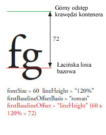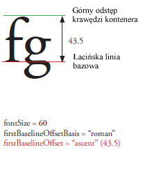
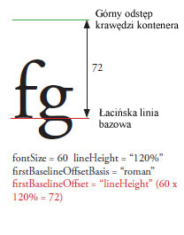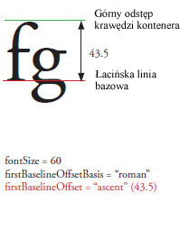
Wartości dozwolone to ciągi BaselineOffset.AUTO, BaselineOffset.ASCENT, BaselineOffset.LINE_HEIGHT i FormatValue.INHERIT oraz liczby od 0 do 1000.
Wartość domyślna, undefined, oznacza, że właściwość nie jest ustawiona.
Jeśli wartość undefined zostanie przekazana kaskadowo, właściwość odziedziczy wartość z obiektu nadrzędnego. Jeśli ta właściwość nie będzie ustawiona w żadnym obiekcie macierzystym, przyjęta zostanie wartość BaselineOffset.AUTO.
Implementacja
public function get firstBaselineOffset():* public function set firstBaselineOffset(value:any):voidZgłasza
RangeError — Gdy ustawiona wartość nie mieści się w zakresie dozwolonym dla tej właściwości.
|
Powiązane elementy interfejsu API
flowComposer | właściwość |
flowComposer:IFlowComposer [tylko do odczytu] | Wersja języka: | ActionScript 3.0 |
| Wersje środowiska wykonawczego: | Flash Player 10, AIR 1.5 |
Zwraca obiekt układacza przepływu, który układa i podświetla tekst w kontenerze, którym zarządza kontroler.
Implementacja
public function get flowComposer():IFlowComposerPowiązane elementy interfejsu API
fontFamily | właściwość |
fontFamily:*| Wersja języka: | ActionScript 3.0 |
| Wersje środowiska wykonawczego: | Flash Player 10, AIR 1.5 |
TextLayoutFormat: nazwa użytej czcionki lub lista nazw czcionek oddzielonych od siebie przecinkami. Środowisko wykonawcze Flash renderuje element za pomocą pierwszej dostępnej czcionki na liście. Na przykład „Arial, Helvetica, _sans” powoduje, że odtwarzacz wyszukuje czcionkę „Arial”, a w przypadku nieznalezienia czcionki Arial — „Helvetica”, a jeśli obie powyższe czcionki nie zostaną znalezione, wyszukuje czcionkę _sans.
Wartość domyślna, undefined, oznacza, że właściwość nie jest ustawiona.
Jeśli wartość undefined zostanie przekazana kaskadowo, właściwość odziedziczy wartość z obiektu nadrzędnego. Jeśli w żadnym obiekcie nadrzędnym ta właściwość nie będzie ustawiona, przyjęta zostanie wartość Arial.
Implementacja
public function get fontFamily():* public function set fontFamily(value:any):voidZgłasza
RangeError — Gdy ustawiona wartość nie mieści się w zakresie dozwolonym dla tej właściwości.
|
fontLookup | właściwość |
fontLookup:*| Wersja języka: | ActionScript 3.0 |
| Wersje środowiska wykonawczego: | Flash Player 10, AIR 1.5 |
TextLayoutFormat: sposób wyszukiwania czcionek. Wartość FontLookup.DEVICE powoduje użycie czcionek zainstalowanych w systemie, w którym jest uruchomiony plik SWF. Wybranie czcionek urządzenia powoduje wyświetlanie filmów mniejszej wielkości, ale tekst nie jest zawsze renderowany w ten sam sposób, na różnych systemach i platformach. Wartość FontLookup.EMBEDDED_CFF powoduje użycie konturów czcionek osadzonych w opublikowanym pliku SWF. Czcionki osadzone zwiększają wielkość pliku SWF (czasami bardzo istotnie), ale tekst jest stale wyświetlany w wybranej czcionce.
Wartości dozwolone FontLookup.DEVICE, FontLookup.EMBEDDED_CFF, FormatValue.INHERIT.
Wartość domyślna, undefined, oznacza, że właściwość nie jest ustawiona.
Jeśli wartość undefined zostanie przekazana kaskadowo, właściwość odziedziczy wartość z obiektu nadrzędnego. Jeśli ta właściwość nie będzie ustawiona w żadnym obiekcie macierzystym, przyjęta zostanie wartość FontLookup.DEVICE.
Implementacja
public function get fontLookup():* public function set fontLookup(value:any):voidZgłasza
RangeError — Gdy ustawiona wartość nie mieści się w zakresie dozwolonym dla tej właściwości.
|
Powiązane elementy interfejsu API
fontSize | właściwość |
fontSize:*| Wersja języka: | ActionScript 3.0 |
| Wersje środowiska wykonawczego: | Flash Player 10, AIR 1.5 |
TextLayoutFormat: rozmiar tekstu w pikselach.
Wartości dozwolone to liczby od 1 do 720 oraz ciąg FormatValue.INHERIT.
Wartość domyślna, undefined, oznacza, że właściwość nie jest ustawiona.
Jeśli wartość undefined zostanie przekazana kaskadowo, właściwość odziedziczy wartość z obiektu nadrzędnego. Jeśli w żadnym obiekcie nadrzędnym ta właściwość nie będzie ustawiona, przyjęta zostanie wartość 12.
Implementacja
public function get fontSize():* public function set fontSize(value:any):voidZgłasza
RangeError — Gdy ustawiona wartość nie mieści się w zakresie dozwolonym dla tej właściwości.
|
fontStyle | właściwość |
fontStyle:*| Wersja języka: | ActionScript 3.0 |
| Wersje środowiska wykonawczego: | Flash Player 10, AIR 1.5 |
TextLayoutFormat: styl tekstu. Możliwe wartości to FontPosture.NORMAL, czyli tekst zwykły, albo FontPosture.ITALIC, czyli kursywa. Ta właściwość ma zastosowanie tylko do czcionek urządzenia (właściwość fontLookup jest ustawiona na flash.text.engine.FontLookup.DEVICE).
Wartości dozwolone: FontPosture.NORMAL, FontPosture.ITALIC, FormatValue.INHERIT.
Wartość domyślna, undefined, oznacza, że właściwość nie jest ustawiona.
Jeśli wartość undefined zostanie przekazana kaskadowo, właściwość odziedziczy wartość z obiektu nadrzędnego. Jeśli ta właściwość nie będzie ustawiona w żadnym obiekcie macierzystym, przyjęta zostanie wartość FontPosture.NORMAL.
Implementacja
public function get fontStyle():* public function set fontStyle(value:any):voidZgłasza
RangeError — Gdy ustawiona wartość nie mieści się w zakresie dozwolonym dla tej właściwości.
|
Powiązane elementy interfejsu API
fontWeight | właściwość |
fontWeight:*| Wersja języka: | ActionScript 3.0 |
| Wersje środowiska wykonawczego: | Flash Player 10, AIR 1.5 |
TextLayoutFormat: grubość tekstu. Możliwe wartości to FontWeight.NORMAL, czyli tekst zwykły, albo FontWeight.BOLD, czyli tekst pogrubiony. Stosowane tylko do czcionek urządzenia (właściwość fontLookup jest ustawiona na flash.text.engine.FontLookup.DEVICE).
Wartości dozwolone: FontWeight.NORMAL, FontWeight.BOLD, FormatValue.INHERIT.
Wartość domyślna, undefined, oznacza, że właściwość nie jest ustawiona.
Jeśli wartość undefined zostanie przekazana kaskadowo, właściwość odziedziczy wartość z obiektu nadrzędnego. Jeśli ta właściwość nie będzie ustawiona w żadnym obiekcie macierzystym, przyjęta zostanie wartość FontWeight.NORMAL.
Implementacja
public function get fontWeight():* public function set fontWeight(value:any):voidZgłasza
RangeError — Gdy ustawiona wartość nie mieści się w zakresie dozwolonym dla tej właściwości.
|
Powiązane elementy interfejsu API
format | właściwość |
format:flashx.textLayout.formats:ITextLayoutFormat| Wersja języka: | ActionScript 3.0 |
| Wersje środowiska wykonawczego: | Flash Player 10, AIR 1.5 |
Zawiera obiekt ITextLayoutFormat, który zawiera atrybuty dla danego kontenera. Kontroler dziedziczy właściwości kontenera z obiektu TextFlow, którego część stanowi. Dzięki tej właściwości różne kontrolery w jednym przepływie tekstu mogą mieć na przykład różne ustawienia kolumn i różne dopełnienia.
Implementacja
public function get format():flashx.textLayout.formats:ITextLayoutFormat public function set format(value:flashx.textLayout.formats:ITextLayoutFormat):voidPowiązane elementy interfejsu API
horizontalScrollPolicy | właściwość |
horizontalScrollPolicy:String| Wersja języka: | ActionScript 3.0 |
| Wersje środowiska wykonawczego: | Flash Player 10, AIR 1.5 |
Określa strategię przewijania w poziomie, którą można ustawić przez przypisanie jednej ze stałych klasy ScrollPolicy: ON, OFF lub AUTO.
Implementacja
public function get horizontalScrollPolicy():String public function set horizontalScrollPolicy(value:String):voidPowiązane elementy interfejsu API
horizontalScrollPosition | właściwość |
horizontalScrollPosition:Number| Wersja języka: | ActionScript 3.0 |
| Wersje środowiska wykonawczego: | Flash Player 10, AIR 1.5 |
Określa aktualne miejsce przewijania w poziomie na stole montażowym. Wartość określa liczbę pikseli od lewej.
Implementacja
public function get horizontalScrollPosition():Number public function set horizontalScrollPosition(value:Number):voidinteractionManager | właściwość |
interactionManager:ISelectionManager [tylko do odczytu] | Wersja języka: | ActionScript 3.0 |
| Wersje środowiska wykonawczego: | Flash Player 10, AIR 1.5 |
InteractionManager skojarzony z obiektem TextFlow.
Określa wszystkie operacje zaznaczania i edycji w tekście. Jeśli nie można zaznaczyć obiektu TextFlow, interactionManager ma wartość null. Aby umożliwić edycję obiektu TextFlow, należy przypisać obiekt interactionManager, który jest jednocześnie ISelectionManager oraz IEditManager. Aby utworzyć obiekt TextFlow dostępny tylko do odczytu, w którym możliwe jest zaznaczanie, należy przypisać obiekt interactionManager będący tylko ISelectionManager.
Implementacja
public function get interactionManager():ISelectionManagerPowiązane elementy interfejsu API
justificationRule | właściwość |
justificationRule:*| Wersja języka: | ActionScript 3.0 |
| Wersje środowiska wykonawczego: | Flash Player 10, AIR 1.5 |
TextLayoutFormat: reguła justowania tekstu w akapicie. Wartość domyślna, FormatValue.AUTO, oznacza justowanie tekstu zgodnie z właściwością locale akapitu. W przypadku wszystkich języków z wyjątkiem japońskiego i chińskiego wartość FormatValue.AUTO jest równoważna wartości JustificationRule.SPACE, co powoduje powiększanie spacji. W przypadku języków japońskiego i chińskiego wartość FormatValue.AUTO jest równoważna JustficationRule.EAST_ASIAN. Justowanie do pewnego stopnia zależy od odstępów między znakami interpunkcyjnymi. W tekście łacińskim i japońskim kropki zajmują szerokość całego znaku, ale w językach wschodnioazjatyckich tylko połowę szerokości znaku. Ponadto w tekście w językach wschodnioazjatyckich odstępy między sąsiednimi znakami interpunkcyjnymi są zmniejszone, zgodnie z tradycyjnymi wschodnioazjatyckimi konwencjami typograficznymi. W poniższym przykładzie należy ponadto zwrócić uwagę na interlinię drugiego wiersza każdego akapitu. W wersji East Asian dwa ostatnie wiersze są przesunięte w lewo. W wersji Roman drugi i kolejne wiersze są przesunięte w lewo.
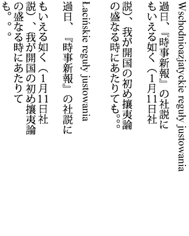
Wartości dozwolone: JustificationRule.EAST_ASIAN, JustificationRule.SPACE, FormatValue.AUTO, FormatValue.INHERIT.
Wartość domyślna, undefined, oznacza, że właściwość nie jest ustawiona.
Jeśli wartość undefined zostanie przekazana kaskadowo, właściwość odziedziczy wartość z obiektu nadrzędnego. Jeśli ta właściwość nie będzie ustawiona w żadnym obiekcie macierzystym, przyjęta zostanie wartość FormatValue.AUTO.
Implementacja
public function get justificationRule():* public function set justificationRule(value:any):voidZgłasza
RangeError — Gdy ustawiona wartość nie mieści się w zakresie dozwolonym dla tej właściwości.
|
Powiązane elementy interfejsu API
justificationStyle | właściwość |
justificationStyle:*| Wersja języka: | ActionScript 3.0 |
| Wersje środowiska wykonawczego: | Flash Player 10, AIR 1.5 |
TextLayoutFormat: styl justowania akapitu. Używane tylko w połączeniu z ustawieniem justificationRule JustificationRule.EAST_ASIAN. Wartość domyślna FormatValue.AUTO jest przy wszystkich ustawieniach narodowych równoważna wartości JustificationStyle.PUSH_IN_KINSOKU. Stałe zdefiniowane w klasie JustificationStyle określają opcje obsługujące znaki kinsoku, będące znakami w alfabecie japońskim, które nie mogą pojawiać się na początku ani na końcu wiersza. W celu zwiększenia odstępów między znakami w tekście należy wybrać JustificationStyle.PUSH-OUT-ONLY. W celu uzyskania efektu przypominającego zastosowanie reguły justificationRule z JustificationRule.SPACE należy użyć stylu JustificationStyle.PRIORITIZE-LEAST-ADJUSTMENT.
Wartości dozwolone: JustificationStyle.PRIORITIZE_LEAST_ADJUSTMENT, JustificationStyle.PUSH_IN_KINSOKU, JustificationStyle.PUSH_OUT_ONLY, FormatValue.AUTO, FormatValue.INHERIT.
Wartość domyślna, undefined, oznacza, że właściwość nie jest ustawiona.
Jeśli wartość undefined zostanie przekazana kaskadowo, właściwość odziedziczy wartość z obiektu nadrzędnego. Jeśli ta właściwość nie będzie ustawiona w żadnym obiekcie macierzystym, przyjęta zostanie wartość FormatValue.AUTO.
Implementacja
public function get justificationStyle():* public function set justificationStyle(value:any):voidZgłasza
RangeError — Gdy ustawiona wartość nie mieści się w zakresie dozwolonym dla tej właściwości.
|
Powiązane elementy interfejsu API
kerning | właściwość |
kerning:*| Wersja języka: | ActionScript 3.0 |
| Wersje środowiska wykonawczego: | Flash Player 10, AIR 1.5 |
TextLayoutFormat: kerning dopasowuje piksele pomiędzy określonymi parami znaków w celu poprawienia czytelności. Kerning jest obsługiwany dla wszystkich rodzajów czcionek zawierających tabele kerningu.
Wartości dozwolone: Kerning.ON, Kerning.OFF, Kerning.AUTO, FormatValue.INHERIT.
Wartość domyślna, undefined, oznacza, że właściwość nie jest ustawiona.
Jeśli wartość undefined zostanie przekazana kaskadowo, właściwość odziedziczy wartość z obiektu nadrzędnego. Jeśli ta właściwość nie będzie ustawiona w żadnym obiekcie macierzystym, przyjęta zostanie wartość Kerning.AUTO.
Implementacja
public function get kerning():* public function set kerning(value:any):voidZgłasza
RangeError — Gdy ustawiona wartość nie mieści się w zakresie dozwolonym dla tej właściwości.
|
Powiązane elementy interfejsu API
leadingModel | właściwość |
leadingModel:*| Wersja języka: | ActionScript 3.0 |
| Wersje środowiska wykonawczego: | Flash Player 10, AIR 1.5 |
TextLayoutFormat: określa model interlinii, czyli ustawienia podstawy i kierunku interlinii. Podstawą odstępu między wierszami jest linia bazowa, do której odwołuje się właściwość lineHeight. Kierunek odstępu między wierszami określa, czy właściwość lineHeight dotyczy odległości linii bazowej wiersza od linii bazowej poprzedniego, czy następnego wiersza. Wartość domyślna FormatValue.AUTO jest interpretowana na podstawie właściwości locale akapitu. W przypadku języka japońskiego i chińskiego przyjmowana jest wartość LeadingModel.IDEOGRAPHIC_TOP_DOWN, a we wszystkich pozostałych językach — wartość LeadingModel.ROMAN_UP.
Podstawa interlinii:

 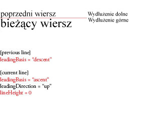
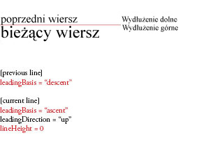
Kierunek interlinii:
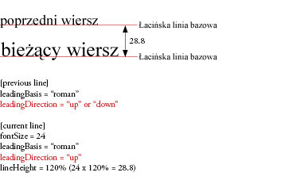  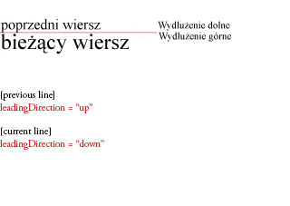
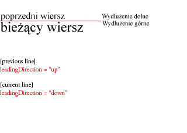
Wartości dozwolone: LeadingModel.ROMAN_UP, LeadingModel.IDEOGRAPHIC_TOP_UP, LeadingModel.IDEOGRAPHIC_CENTER_UP, LeadingModel.IDEOGRAPHIC_TOP_DOWN, LeadingModel.IDEOGRAPHIC_CENTER_DOWN, LeadingModel.APPROXIMATE_TEXT_FIELD, LeadingModel.ASCENT_DESCENT_UP, LeadingModel.BOX, LeadingModel.AUTO, FormatValue.INHERIT.
Wartość domyślna, undefined, oznacza, że właściwość nie jest ustawiona.
Jeśli wartość undefined zostanie przekazana kaskadowo, właściwość odziedziczy wartość z obiektu nadrzędnego. Jeśli ta właściwość nie będzie ustawiona w żadnym obiekcie macierzystym, przyjęta zostanie wartość LeadingModel.AUTO.
Implementacja
public function get leadingModel():* public function set leadingModel(value:any):voidZgłasza
RangeError — Gdy ustawiona wartość nie mieści się w zakresie dozwolonym dla tej właściwości.
|
Powiązane elementy interfejsu API
ligatureLevel | właściwość |
ligatureLevel:*| Wersja języka: | ActionScript 3.0 |
| Wersje środowiska wykonawczego: | Flash Player 10, AIR 1.5 |
TextLayoutFormat: określa, które z ligatur zdefiniowanych w czcionce mogą być używane w tekście. Ligatury, jakie pojawiają się dla poszczególnych tych ustawień, są uzależnione od czcionki. Ligatura pojawia się w miejscach, w których dwie lub większa liczba liter jest połączona w jeden glif. Ligatury zazwyczaj zastępują sąsiednie znaki ze wspólnymi typowymi składnikami, takie jak pary liter „fi”, „fl” czy „ae”. Używane są zarówno z zestawami znaków łacińskich, jak i niełacińskich. Zbiory ligatur aktywowane przez wartości klasy LigatureLevel — MINIMUM, COMMON, UNCOMMON i EXOTIC — sumują się. Każda wartość zezwala teraz na użycie nowego zbioru ligatur, ale jednocześnie obejmuje poprzednie zbiory.
Uwaga: Podczas pracy z czcionkami języka arabskiego lub syryjskiego wartość ligatureLevel należy ustawić na MINIMUM lub większą.

Wartości dozwolone: LigatureLevel.MINIMUM, LigatureLevel.COMMON, LigatureLevel.UNCOMMON, LigatureLevel.EXOTIC, FormatValue.INHERIT.
Wartość domyślna, undefined, oznacza, że właściwość nie jest ustawiona.
Jeśli wartość undefined zostanie przekazana kaskadowo, właściwość odziedziczy wartość z obiektu nadrzędnego. Jeśli ta właściwość nie będzie ustawiona w żadnym obiekcie macierzystym, przyjęta zostanie wartość LigatureLevel.COMMON.
Implementacja
public function get ligatureLevel():* public function set ligatureLevel(value:any):voidZgłasza
RangeError — Gdy ustawiona wartość nie mieści się w zakresie dozwolonym dla tej właściwości.
|
Powiązane elementy interfejsu API
lineBreak | właściwość |
lineBreak:*| Wersja języka: | ActionScript 3.0 |
| Wersje środowiska wykonawczego: | Flash Player 10, AIR 1.5 |
TextLayoutFormat: steruje podziałem wyrazów między wiersze w kontenerze (jeśli wartość przekazana kaskadowo jest równa undefined, przyjmowana jest wartość domyślna). Tekst w kontenerze można ustawić w taki sposób, aby był dopasowany do szerokości kontenera (LineBreak.TO_FIT), lub w taki sposób, aby podział wiersza był dozwolony tylko przy znakach powrotu lub nowego wiersza (LineBreak.EXPLICIT).
Wartości dozwolone: LineBreak.EXPLICIT, LineBreak.TO_FIT, FormatValue.INHERIT.
Wartość domyślna, undefined, oznacza, że właściwość nie jest ustawiona.
Jeśli przekazana kaskadowo właściwość będzie miała wartość undefined, zostanie przyjęta wartość LineBreak.TO_FIT.
Implementacja
public function get lineBreak():* public function set lineBreak(value:any):voidZgłasza
RangeError — Gdy ustawiona wartość nie mieści się w zakresie dozwolonym dla tej właściwości.
|
Powiązane elementy interfejsu API
lineHeight | właściwość |
lineHeight:*| Wersja języka: | ActionScript 3.0 |
| Wersje środowiska wykonawczego: | Flash Player 10, AIR 1.5 |
TextLayoutFormat: specyfikacja interlinii tekstu. Odległość od linii bazowej poprzedniego lub następnego wiersza (w zależności od LeadingModel) do linii bazowej bieżącego wiersza jest równa maksymalnej odległości odstępu między wierszami zastosowanej dla dowolnego znaku w wierszu. Jest to liczba lub wartość procentowa. Jeśli określona jest wartość procentowa, należy wprowadzić ciąg znaków, np. 140%.
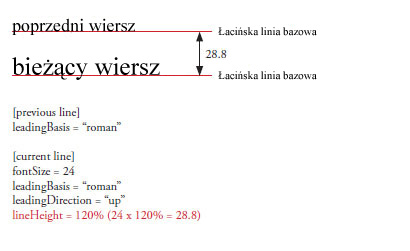
Poprawne wartości liczbowe należą do zakresu od -720 do 720.
Dozwolone są wartości procentowe z zakresu od -1000% do 1000%.
Wartość dozwolona: FormatValue.INHERIT.
Wartość domyślna, undefined, oznacza, że właściwość nie jest ustawiona.
Jeśli wartość undefined zostanie przekazana kaskadowo, właściwość odziedziczy wartość z obiektu nadrzędnego. Jeśli w żadnym obiekcie nadrzędnym ta właściwość nie będzie ustawiona, przyjęta zostanie wartość 120%.
Implementacja
public function get lineHeight():* public function set lineHeight(value:any):voidZgłasza
RangeError — Gdy ustawiona wartość nie mieści się w zakresie dozwolonym dla tej właściwości.
|
lineThrough | właściwość |
lineThrough:*| Wersja języka: | ActionScript 3.0 |
| Wersje środowiska wykonawczego: | Flash Player 10, AIR 1.5 |
TextLayoutFormat: wartość true powoduje zastosowanie przekreślenia, czyli linii biegnącej przez środek wiersza tekstu.
Wartości dozwolone to true, false oraz FormatValue.INHERIT.
Wartość domyślna, undefined, oznacza, że właściwość nie jest ustawiona.
Jeśli wartość undefined zostanie przekazana kaskadowo, właściwość odziedziczy wartość z obiektu nadrzędnego. Jeśli w żadnym obiekcie nadrzędnym ta właściwość nie będzie ustawiona, przyjęta zostanie wartość false.
Implementacja
public function get lineThrough():* public function set lineThrough(value:any):voidZgłasza
RangeError — Gdy ustawiona wartość nie mieści się w zakresie dozwolonym dla tej właściwości.
|
linkActiveFormat | właściwość |
linkActiveFormat:*| Wersja języka: | ActionScript 3.0 |
| Wersje środowiska wykonawczego: | Flash Player 10, AIR 1.5 |
TextLayoutFormat: Definiuje atrybuty formatujące używane dla łączy w stanie normalnym. Ta wartość jest przekazywana w dół w hierarchii i jest stosowana do wszystkich podrzędnych łączy. Akceptuje wartość inherit zdefiniowaną w klasie ITextLayoutFormat lub konwertuje tablicę obiektów z kluczami i wartościami na obiekt TextLayoutFormat.
Wartość dozwolona: FormatValue.INHERIT.
Wartość domyślna, undefined, oznacza, że właściwość nie jest ustawiona.
Jeśli wartość undefined zostanie przekazana kaskadowo, właściwość odziedziczy wartość z obiektu nadrzędnego. Jeśli w żadnym obiekcie nadrzędnym ta właściwość nie będzie ustawiona, przyjęta zostanie wartość null.
Implementacja
public function get linkActiveFormat():* public function set linkActiveFormat(value:any):voidZgłasza
RangeError — Gdy ustawiona wartość nie mieści się w zakresie dozwolonym dla tej właściwości.
|
linkHoverFormat | właściwość |
linkHoverFormat:*| Wersja języka: | ActionScript 3.0 |
| Wersje środowiska wykonawczego: | Flash Player 10, AIR 1.5 |
TextLayoutFormat: Definiuje atrybuty formatowania używane dla łączy w stanie wskazywania, gdy wskaźnik myszy znajduje się w obrębie obwiedni łącza (nasuwanie kursora). Ta wartość jest przekazywana w dół w hierarchii i jest stosowana do wszystkich podrzędnych łączy. Akceptuje wartość inherit zdefiniowaną w klasie ITextLayoutFormat lub konwertuje tablicę obiektów z kluczami i wartościami na obiekt TextLayoutFormat.
Wartość dozwolona: FormatValue.INHERIT.
Wartość domyślna, undefined, oznacza, że właściwość nie jest ustawiona.
Jeśli wartość undefined zostanie przekazana kaskadowo, właściwość odziedziczy wartość z obiektu nadrzędnego. Jeśli w żadnym obiekcie nadrzędnym ta właściwość nie będzie ustawiona, przyjęta zostanie wartość null.
Implementacja
public function get linkHoverFormat():* public function set linkHoverFormat(value:any):voidZgłasza
RangeError — Gdy ustawiona wartość nie mieści się w zakresie dozwolonym dla tej właściwości.
|
linkNormalFormat | właściwość |
linkNormalFormat:*| Wersja języka: | ActionScript 3.0 |
| Wersje środowiska wykonawczego: | Flash Player 10, AIR 1.5 |
TextLayoutFormat: Definiuje atrybuty formatujące używane dla łączy w stanie normalnym. Ta wartość jest przekazywana w dół w hierarchii i jest stosowana do wszystkich podrzędnych łączy. Akceptuje wartość inherit zdefiniowaną w klasie ITextLayoutFormat lub konwertuje tablicę obiektów z kluczami i wartościami na obiekt TextLayoutFormat.
Wartość dozwolona: FormatValue.INHERIT.
Wartość domyślna, undefined, oznacza, że właściwość nie jest ustawiona.
Jeśli wartość undefined zostanie przekazana kaskadowo, właściwość odziedziczy wartość z obiektu nadrzędnego. Jeśli w żadnym obiekcie nadrzędnym ta właściwość nie będzie ustawiona, przyjęta zostanie wartość null.
Implementacja
public function get linkNormalFormat():* public function set linkNormalFormat(value:any):voidZgłasza
RangeError — Gdy ustawiona wartość nie mieści się w zakresie dozwolonym dla tej właściwości.
|
listAutoPadding | właściwość |
listAutoPadding:*| Wersja języka: | ActionScript 3.0 |
| Wersje środowiska wykonawczego: | Flash Player 10, AIR 1.5 |
TextLayoutFormat: Określa automatyczne wcięcie dla krawędzi początkowych list w przypadkach, gdy wartość dopełnienia listy po danej stronie wynosi auto.
Wartości dozwolone to liczby od –1000 do 1000 oraz ciąg FormatValue.INHERIT.
Wartość domyślna, undefined, oznacza, że właściwość nie jest ustawiona.
Jeśli wartość undefined zostanie przekazana kaskadowo, właściwość odziedziczy wartość z obiektu nadrzędnego. Jeśli ta właściwość nie będzie ustawiona w żadnym obiekcie macierzystym, przyjęta zostanie wartość 40.
Implementacja
public function get listAutoPadding():* public function set listAutoPadding(value:any):voidZgłasza
RangeError — Gdy ustawiona wartość nie mieści się w zakresie dozwolonym dla tej właściwości.
|
listMarkerFormat | właściwość |
listMarkerFormat:*| Wersja języka: | ActionScript 3.0 |
| Wersje środowiska wykonawczego: | Flash Player 10, AIR 1.5 |
TextLayoutFormat: Definiuje znaczniki formatowania list atrybutów. Ta wartość jest przekazywana w dół w hierarchii i jest stosowana do wszystkich łączy potomnych. Akceptuje wartość inherit zdefiniowaną w klasie IListMarkerFormat lub konwertuje tablicę obiektów z kluczami i wartościami na obiekt ListMarkerFormat.
Wartość dozwolona: FormatValue.INHERIT.
Wartość domyślna, undefined, oznacza, że właściwość nie jest ustawiona.
Jeśli wartość undefined zostanie przekazana kaskadowo, właściwość odziedziczy wartość z obiektu nadrzędnego. Jeśli w żadnym obiekcie nadrzędnym ta właściwość nie będzie ustawiona, przyjęta zostanie wartość null.
Implementacja
public function get listMarkerFormat():* public function set listMarkerFormat(value:any):voidZgłasza
RangeError — Gdy ustawiona wartość nie mieści się w zakresie dozwolonym dla tej właściwości.
|
listStylePosition | właściwość |
listStylePosition:*| Wersja języka: | ActionScript 3.0 |
| Wersje środowiska wykonawczego: | Flash Player 10, AIR 1.5 |
TextLayoutFormat:
Wartości dozwolone: ListStylePosition.INSIDE, ListStylePosition.OUTSIDE, FormatValue.INHERIT.
Wartość domyślna, undefined, oznacza, że właściwość nie jest ustawiona.
Jeśli wartość undefined zostanie przekazana kaskadowo, właściwość odziedziczy wartość z obiektu nadrzędnego. Jeśli ta właściwość nie będzie ustawiona w żadnym obiekcie macierzystym, przyjęta zostanie wartość ListStylePosition.OUTSIDE.
Implementacja
public function get listStylePosition():* public function set listStylePosition(value:any):voidZgłasza
RangeError — Gdy ustawiona wartość nie mieści się w zakresie dozwolonym dla tej właściwości.
|
Powiązane elementy interfejsu API
listStyleType | właściwość |
listStyleType:*| Wersja języka: | ActionScript 3.0 |
| Wersje środowiska wykonawczego: | Flash Player 10, AIR 1.5 |
TextLayoutFormat:
Wartości dozwolone: ListStyleType.UPPER_ALPHA, ListStyleType.LOWER_ALPHA, ListStyleType.UPPER_ROMAN, ListStyleType.LOWER_ROMAN, ListStyleType.NONE, ListStyleType.DISC, ListStyleType.CIRCLE, ListStyleType.SQUARE, ListStyleType.BOX, ListStyleType.CHECK, ListStyleType.DIAMOND, ListStyleType.HYPHEN, ListStyleType.ARABIC_INDIC, ListStyleType.BENGALI, ListStyleType.DECIMAL, ListStyleType.DECIMAL_LEADING_ZERO, ListStyleType.DEVANAGARI, ListStyleType.GUJARATI, ListStyleType.GURMUKHI, ListStyleType.KANNADA, ListStyleType.PERSIAN, ListStyleType.THAI, ListStyleType.URDU, ListStyleType.CJK_EARTHLY_BRANCH, ListStyleType.CJK_HEAVENLY_STEM, ListStyleType.HANGUL, ListStyleType.HANGUL_CONSTANT, ListStyleType.HIRAGANA, ListStyleType.HIRAGANA_IROHA, ListStyleType.KATAKANA, ListStyleType.KATAKANA_IROHA, ListStyleType.LOWER_ALPHA, ListStyleType.LOWER_GREEK, ListStyleType.LOWER_LATIN, ListStyleType.UPPER_ALPHA, ListStyleType.UPPER_GREEK, ListStyleType.UPPER_LATIN, FormatValue.INHERIT.
Wartość domyślna, undefined, oznacza, że właściwość nie jest ustawiona.
Jeśli wartość undefined zostanie przekazana kaskadowo, właściwość odziedziczy wartość z obiektu nadrzędnego. Jeśli ta właściwość nie będzie ustawiona w żadnym obiekcie macierzystym, przyjęta zostanie wartość ListStyleType.DISC.
Implementacja
public function get listStyleType():* public function set listStyleType(value:any):voidZgłasza
RangeError — Gdy ustawiona wartość nie mieści się w zakresie dozwolonym dla tej właściwości.
|
Powiązane elementy interfejsu API
locale | właściwość |
locale:*| Wersja języka: | ActionScript 3.0 |
| Wersje środowiska wykonawczego: | Flash Player 10, AIR 1.5 |
TextLayoutFormat: ustawienia narodowe tekstu. Steruje przekształceniami i ustalaniem kształtów dla wielkości liter. Używane są standardowe identyfikatory ustawień narodowych opisane w standardzie technicznym Unicode nr 35. Na przykład: en, en_US i en-US oznaczają język angielski, ja oznacza język japoński Japanese.
Wartość domyślna, undefined, oznacza, że właściwość nie jest ustawiona.
Jeśli wartość undefined zostanie przekazana kaskadowo, właściwość odziedziczy wartość z obiektu nadrzędnego. Jeśli w żadnym obiekcie nadrzędnym ta właściwość nie będzie ustawiona, przyjęta zostanie wartość en.
Implementacja
public function get locale():* public function set locale(value:any):voidZgłasza
RangeError — Gdy ustawiona wartość nie mieści się w zakresie dozwolonym dla tej właściwości.
|
paddingBottom | właściwość |
paddingBottom:*| Wersja języka: | ActionScript 3.0 |
| Wersje środowiska wykonawczego: | Flash Player 10, AIR 1.5 |
TextLayoutFormat: Wstawka dolna w pikselach. Domyślne ustawienie automatyczne wynosi zero z wyjątkiem list, w przypadku których początkowe dopełnienie boczne wynosi 45. (W przypadku wartości undefined przekazanej kaskadowo jest przyjmowana wartość domyślna). Odstęp między dolną krawędzią kontenera a tekstem. Wartości dozwolone to liczby i ciąg auto.
W przypadku tekstu poziomego w kontenerach przewijanych z wieloma kolumnami pierwsza kolumna i kolejne kolumny przedstawiają dopełnienie jako odstęp u dołu kontenera, ale w przypadku ostatniej kolumny (jeśli cały tekst się nie mieści) konieczne może być przewinięcie w celu wyświetlenia dopełnienia.
Wartości dozwolone to ciągi FormatValue.AUTO i FormatValue.INHERIT oraz liczby od –8000 do 8000.
Wartość domyślna, undefined, oznacza, że właściwość nie jest ustawiona.
Jeśli przekazana kaskadowo właściwość będzie miała wartość undefined, ta właściwość przyjmie wartość FormatValue.AUTO.
Implementacja
public function get paddingBottom():* public function set paddingBottom(value:any):voidZgłasza
RangeError — Gdy ustawiona wartość nie mieści się w zakresie dozwolonym dla tej właściwości.
|
Powiązane elementy interfejsu API
paddingLeft | właściwość |
paddingLeft:*| Wersja języka: | ActionScript 3.0 |
| Wersje środowiska wykonawczego: | Flash Player 10, AIR 1.5 |
TextLayoutFormat: Lewa wstawka w pikselach. Domyślne ustawienie automatyczne wynosi zero z wyjątkiem list, w przypadku których początkowe dopełnienie boczne wynosi 45. (W przypadku wartości undefined przekazanej kaskadowo jest przyjmowana wartość domyślna). Odstęp między lewą krawędzią kontenera a tekstem. Wartości dozwolone to liczby i ciąg auto.
W przypadku tekstu pionowego w kontenerach przewijanych z wieloma kolumnami pierwsze i kolejne kolumny przedstawiają dopełnienie jako pusty odstęp na końcu kontenera, ale w przypadku ostatniej kolumny (jeśli cały tekst się nie mieści) konieczne może być przewinięcie w celu wyświetlenia dopełnienia.
Wartości dozwolone to ciągi FormatValue.AUTO i FormatValue.INHERIT oraz liczby od –8000 do 8000.
Wartość domyślna, undefined, oznacza, że właściwość nie jest ustawiona.
Jeśli przekazana kaskadowo właściwość będzie miała wartość undefined, ta właściwość przyjmie wartość FormatValue.AUTO.
Implementacja
public function get paddingLeft():* public function set paddingLeft(value:any):voidZgłasza
RangeError — Gdy ustawiona wartość nie mieści się w zakresie dozwolonym dla tej właściwości.
|
Powiązane elementy interfejsu API
paddingRight | właściwość |
paddingRight:*| Wersja języka: | ActionScript 3.0 |
| Wersje środowiska wykonawczego: | Flash Player 10, AIR 1.5 |
TextLayoutFormat: Prawa wstawka w pikselach. Domyślne ustawienie automatyczne wynosi zero z wyjątkiem list, w przypadku których początkowe dopełnienie boczne wynosi 45. (W przypadku wartości undefined przekazanej kaskadowo jest przyjmowana wartość domyślna). Odstęp między prawą krawędzią kontenera a tekstem. Wartości dozwolone to liczby i ciąg auto.
Wartości dozwolone to ciągi FormatValue.AUTO i FormatValue.INHERIT oraz liczby od –8000 do 8000.
Wartość domyślna, undefined, oznacza, że właściwość nie jest ustawiona.
Jeśli przekazana kaskadowo właściwość będzie miała wartość undefined, ta właściwość przyjmie wartość FormatValue.AUTO.
Implementacja
public function get paddingRight():* public function set paddingRight(value:any):voidZgłasza
RangeError — Gdy ustawiona wartość nie mieści się w zakresie dozwolonym dla tej właściwości.
|
Powiązane elementy interfejsu API
paddingTop | właściwość |
paddingTop:*| Wersja języka: | ActionScript 3.0 |
| Wersje środowiska wykonawczego: | Flash Player 10, AIR 1.5 |
TextLayoutFormat: Górna wstawka w pikselach. Domyślne ustawienie automatyczne wynosi zero z wyjątkiem list, w przypadku których początkowe dopełnienie boczne wynosi 45. (W przypadku wartości undefined przekazanej kaskadowo jest przyjmowana wartość domyślna). Odstęp między górną krawędzią kontenera a tekstem. Wartości dozwolone to liczby i ciąg auto.
Wartości dozwolone to ciągi FormatValue.AUTO i FormatValue.INHERIT oraz liczby od –8000 do 8000.
Wartość domyślna, undefined, oznacza, że właściwość nie jest ustawiona.
Jeśli przekazana kaskadowo właściwość będzie miała wartość undefined, ta właściwość przyjmie wartość FormatValue.AUTO.
Implementacja
public function get paddingTop():* public function set paddingTop(value:any):voidZgłasza
RangeError — Gdy ustawiona wartość nie mieści się w zakresie dozwolonym dla tej właściwości.
|
Powiązane elementy interfejsu API
paragraphEndIndent | właściwość |
paragraphEndIndent:*| Wersja języka: | ActionScript 3.0 |
| Wersje środowiska wykonawczego: | Flash Player 10, AIR 1.5 |
TextLayoutFormat: liczba określająca (w pikselach) wielkość wcięcia końcowej krawędzi akapitu. Oznacza prawą krawędź w tekście zapisanym od lewej do prawej i lewą krawędź w tekście zapisanym od prawej do lewej strony.
Wartości dozwolone to liczby od 0 do 8000 oraz ciąg FormatValue.INHERIT.
Wartość domyślna, undefined, oznacza, że właściwość nie jest ustawiona.
Jeśli wartość undefined zostanie przekazana kaskadowo, właściwość odziedziczy wartość z obiektu nadrzędnego. Jeśli w żadnym obiekcie nadrzędnym ta właściwość nie będzie ustawiona, przyjęta zostanie wartość 0.
Implementacja
public function get paragraphEndIndent():* public function set paragraphEndIndent(value:any):voidZgłasza
RangeError — Gdy ustawiona wartość nie mieści się w zakresie dozwolonym dla tej właściwości.
|
paragraphSpaceAfter | właściwość |
paragraphSpaceAfter:*| Wersja języka: | ActionScript 3.0 |
| Wersje środowiska wykonawczego: | Flash Player 10, AIR 1.5 |
TextLayoutFormat: liczba, która określa w pikselach ilość miejsca, jaką należy pozostawić za akapitem. Zwijane razem z odstępem paragraphSpaceBefore.
Wartości dozwolone to liczby od 0 do 8000 oraz ciąg FormatValue.INHERIT.
Wartość domyślna, undefined, oznacza, że właściwość nie jest ustawiona.
Jeśli wartość undefined zostanie przekazana kaskadowo, właściwość odziedziczy wartość z obiektu nadrzędnego. Jeśli w żadnym obiekcie nadrzędnym ta właściwość nie będzie ustawiona, przyjęta zostanie wartość 0.
Implementacja
public function get paragraphSpaceAfter():* public function set paragraphSpaceAfter(value:any):voidZgłasza
RangeError — Gdy ustawiona wartość nie mieści się w zakresie dozwolonym dla tej właściwości.
|
paragraphSpaceBefore | właściwość |
paragraphSpaceBefore:*| Wersja języka: | ActionScript 3.0 |
| Wersje środowiska wykonawczego: | Flash Player 10, AIR 1.5 |
TextLayoutFormat: liczba, która określa w pikselach ilość miejsca, jaką należy pozostawić przed akapitem. Zwijane razem z odstępem paragraphSpaceAfter.
Wartości dozwolone to liczby od 0 do 8000 oraz ciąg FormatValue.INHERIT.
Wartość domyślna, undefined, oznacza, że właściwość nie jest ustawiona.
Jeśli wartość undefined zostanie przekazana kaskadowo, właściwość odziedziczy wartość z obiektu nadrzędnego. Jeśli w żadnym obiekcie nadrzędnym ta właściwość nie będzie ustawiona, przyjęta zostanie wartość 0.
Implementacja
public function get paragraphSpaceBefore():* public function set paragraphSpaceBefore(value:any):voidZgłasza
RangeError — Gdy ustawiona wartość nie mieści się w zakresie dozwolonym dla tej właściwości.
|
paragraphStartIndent | właściwość |
paragraphStartIndent:*| Wersja języka: | ActionScript 3.0 |
| Wersje środowiska wykonawczego: | Flash Player 10, AIR 1.5 |
TextLayoutFormat: liczba określająca (w pikselach) wielkość wcięcia początkowej krawędzi akapitu. Oznacza lewą krawędź w tekście zapisanym od lewej do prawej i prawą krawędź w tekście zapisanym od prawej do lewej strony.
Wartości dozwolone to liczby od 0 do 8000 oraz ciąg FormatValue.INHERIT.
Wartość domyślna, undefined, oznacza, że właściwość nie jest ustawiona.
Jeśli wartość undefined zostanie przekazana kaskadowo, właściwość odziedziczy wartość z obiektu nadrzędnego. Jeśli w żadnym obiekcie nadrzędnym ta właściwość nie będzie ustawiona, przyjęta zostanie wartość 0.
Implementacja
public function get paragraphStartIndent():* public function set paragraphStartIndent(value:any):voidZgłasza
RangeError — Gdy ustawiona wartość nie mieści się w zakresie dozwolonym dla tej właściwości.
|
renderingMode | właściwość |
renderingMode:*| Wersja języka: | ActionScript 3.0 |
| Wersje środowiska wykonawczego: | Flash Player 10, AIR 1.5 |
TextLayoutFormat: tryb renderowania używany dla tego tekstu. Ma zastosowanie tylko do czcionek osadzonych (właściwość fontLookup ustawiona na FontLookup.EMBEDDED_CFF).
Wartości dozwolone: RenderingMode.NORMAL, RenderingMode.CFF, FormatValue.INHERIT.
Wartość domyślna, undefined, oznacza, że właściwość nie jest ustawiona.
Jeśli wartość undefined zostanie przekazana kaskadowo, właściwość odziedziczy wartość z obiektu nadrzędnego. Jeśli ta właściwość nie będzie ustawiona w żadnym obiekcie macierzystym, przyjęta zostanie wartość RenderingMode.CFF.
Implementacja
public function get renderingMode():* public function set renderingMode(value:any):voidZgłasza
RangeError — Gdy ustawiona wartość nie mieści się w zakresie dozwolonym dla tej właściwości.
|
Powiązane elementy interfejsu API
rootElement | właściwość |
rootElement:ContainerFormattedElement [tylko do odczytu] | Wersja języka: | ActionScript 3.0 |
| Wersje środowiska wykonawczego: | Flash Player 10, AIR 1.5 |
Zwraca element główny, jaki występuje w kontenerze. Element główny może być na przykład instancją klasy DivElement lub TextFlow.
Implementacja
public function get rootElement():ContainerFormattedElementPowiązane elementy interfejsu API
styleName | właściwość |
styleName:*| Wersja języka: | ActionScript 3.0 |
| Wersje środowiska wykonawczego: | Flash Player 10, AIR 1.5 |
TextLayoutFormat: Przypisuje klasę identyfikującą do elementu, umożliwiając ustawienie stylu dla elementu za pomocą odniesienia do właściwości styleName.
Wartość domyślna, undefined, oznacza, że właściwość nie jest ustawiona.
Jeśli przekazana kaskadowo właściwość będzie miała wartość undefined, zostanie przyjęta wartość null.
Implementacja
public function get styleName():* public function set styleName(value:any):voidZgłasza
RangeError — Gdy ustawiona wartość nie mieści się w zakresie dozwolonym dla tej właściwości.
|
styles | właściwość |
styles:Object [tylko do odczytu] | Wersja języka: | ActionScript 3.0 |
| Wersje środowiska wykonawczego: | Flash Player 10, AIR 1.5 |
Zwraca właściwość styles tego obiektu ContainerController. Metoda pobierająca tworzy kopię słownika stylów. Zwrócony obiekt zawiera wszystkie style ustawione we właściwości format, również styl główny i style użytkownika. Zwracany obiekt składa się z tablicy par nazwa_stylu-wartość.
Implementacja
public function get styles():ObjectPowiązane elementy interfejsu API
tabStops | właściwość |
tabStops:*| Wersja języka: | ActionScript 3.0 |
| Wersje środowiska wykonawczego: | Flash Player 10, AIR 1.5 |
TextLayoutFormat: określa znaczniki tabulacji skojarzone z akapitem. Metody ustawiające mogą przyjmować tablicę obiektów TabStopFormat, zagęszczoną reprezentację ciągu, wartość undefined lub wartość FormatValue.INHERIT. Zagęszczona reprezentacja ciągu jest zawsze konwertowana na tablicę obiektów TabStopFormat.
Format oparty na łańcuchu jest listą znaczników tabulacji, gdzie każdy znacznik jest ograniczony przez jedną lub większą liczbę spacji.
Znacznik tabulacji ma następującą formę: <typ wyrównania><położenie wyrównania>|<token wyrównania>.
Typ wyrównania jest jednym znakiem i może to być znak S, E, C lub D (albo równoważniki w postaci małych liter). S lub s dla rozpoczęcia, E lub e dla zakończenia, C lub c dla środka, D lub d dla wartości dziesiętnej. Typ wyrównania jest opcjonalny i nie jest określony z domyślną wartością S.
Pozycją wyrównania jest liczba, która jest określona zgodnie ze specyfikacją FXG dla liczb (zapis dziesiętny lub naukowy). Położenie wyrównania jest wymagane.
Pasek pionowy służy do oddzielania położenia wyrównania od tokenu wyrównania i powinien być używany tylko wówczas, gdy istnieje token wyrównania.
Token wyrównania jest opcjonalny, jeśli typem wyrównania jest D i nie powinien być określany, jeśli typ wyrównania jest inny niż D. Token wyrównania może być dowolną sekwencją znaków zakończoną spacją, która kończy znacznik tabulatora (w przypadku ostatniego znacznika tabulatora znak spacji jest opcjonalny; przyjmowany jest koniec tokenu wyrównania). Spacja może być częścią tokenu wyrównania, jeśli token jest zakończony ukośnikiem w lewo (\). Ukośnik w lewo może być częścią tokenu wyrównania, jeśli jest on zakończony kolejnym ukośnikiem w lewo (\\). Jeśli typ wyrównania to D, a token wyrównania nie jest określony, przyjmie on wartość domyślną null.
Wartość domyślna, undefined, oznacza, że właściwość nie jest ustawiona.
Jeśli wartość undefined zostanie przekazana kaskadowo, właściwość odziedziczy wartość z obiektu nadrzędnego. Jeśli w żadnym obiekcie nadrzędnym ta właściwość nie będzie ustawiona, przyjęta zostanie wartość null.
Implementacja
public function get tabStops():* public function set tabStops(value:any):voidZgłasza
RangeError — Gdy ustawiona wartość nie mieści się w zakresie dozwolonym dla tej właściwości.
|
Powiązane elementy interfejsu API
textAlign | właściwość |
textAlign:*| Wersja języka: | ActionScript 3.0 |
| Wersje środowiska wykonawczego: | Flash Player 10, AIR 1.5 |
TextLayoutFormat: wyrównanie wierszy akapitu względem kontenera. TextAlign.LEFT powoduje wyrównywanie wierszy do lewej krawędzi kontenera. TextAlign.RIGHT powoduje wyrównywanie do prawej krawędzi. TextAlign.CENTER powoduje, że wiersz jest ustawiany w równej odległości od lewej i prawej krawędzi. TextAlign.JUSTIFY powoduje rozstrzelenie wierszy tak, aby zajmowały całe dostępne miejsce. TextAlign.START to równoważnik ustawienia „left” w tekście zapisanym od lewej do prawej albo ustawienia „right” w tekście zapisanym od prawej do lewej. TextAlign.END to równoważnik ustawienia „right” w tekście zapisanym od lewej do prawej albo ustawienia „left” w tekście zapisanym od prawej do lewej.
Wartości dozwolone: TextAlign.LEFT, TextAlign.RIGHT, TextAlign.CENTER, TextAlign.JUSTIFY, TextAlign.START, TextAlign.END, FormatValue.INHERIT.
Wartość domyślna, undefined, oznacza, że właściwość nie jest ustawiona.
Jeśli wartość undefined zostanie przekazana kaskadowo, właściwość odziedziczy wartość z obiektu nadrzędnego. Jeśli ta właściwość nie będzie ustawiona w żadnym obiekcie macierzystym, przyjęta zostanie wartość TextAlign.START.
Implementacja
public function get textAlign():* public function set textAlign(value:any):voidZgłasza
RangeError — Gdy ustawiona wartość nie mieści się w zakresie dozwolonym dla tej właściwości.
|
Powiązane elementy interfejsu API
textAlignLast | właściwość |
textAlignLast:*| Wersja języka: | ActionScript 3.0 |
| Wersje środowiska wykonawczego: | Flash Player 10, AIR 1.5 |
TextLayoutFormat: wyrównanie ostatniego (lub jedynego) wiersza tekstu justowanego w akapicie względem kontenera. Jeśli właściwość textAlign jest ustawiona na TextAlign.JUSTIFY, textAlignLast określa sposób wyrównania ostatniego wiersza (lub jedynego wiersza w bloku jednowierszowym). Wartości są podobne do textAlign.
Wartości dozwolone: TextAlign.LEFT, TextAlign.RIGHT, TextAlign.CENTER, TextAlign.JUSTIFY, TextAlign.START, TextAlign.END, FormatValue.INHERIT.
Wartość domyślna, undefined, oznacza, że właściwość nie jest ustawiona.
Jeśli wartość undefined zostanie przekazana kaskadowo, właściwość odziedziczy wartość z obiektu nadrzędnego. Jeśli ta właściwość nie będzie ustawiona w żadnym obiekcie macierzystym, przyjęta zostanie wartość TextAlign.START.
Implementacja
public function get textAlignLast():* public function set textAlignLast(value:any):voidZgłasza
RangeError — Gdy ustawiona wartość nie mieści się w zakresie dozwolonym dla tej właściwości.
|
Powiązane elementy interfejsu API
textAlpha | właściwość |
textAlpha:*| Wersja języka: | ActionScript 3.0 |
| Wersje środowiska wykonawczego: | Flash Player 10, AIR 1.5 |
TextLayoutFormat: wartość Alfa (przezroczystość) dla tekstu. Wartość 0 określa całkowitą przezroczystość, a wartość 1 określa całkowitą nieprzezroczystość. Obiekty wyświetlane z właściwością textAlpha ustawioną na 0 są aktywne, mimo że są niewidoczne.
Wartości dozwolone to liczby od 0 do 1 oraz FormatValue.INHERIT.
Wartość domyślna, undefined, oznacza, że właściwość nie jest ustawiona.
Jeśli wartość undefined zostanie przekazana kaskadowo, właściwość odziedziczy wartość z obiektu nadrzędnego. Jeśli w żadnym obiekcie nadrzędnym ta właściwość nie będzie ustawiona, przyjęta zostanie wartość 1.
Implementacja
public function get textAlpha():* public function set textAlpha(value:any):voidZgłasza
RangeError — Gdy ustawiona wartość nie mieści się w zakresie dozwolonym dla tej właściwości.
|
textDecoration | właściwość |
textDecoration:*| Wersja języka: | ActionScript 3.0 |
| Wersje środowiska wykonawczego: | Flash Player 10, AIR 1.5 |
TextLayoutFormat: dekoracja tekstu. Używane w celu zastosowania podkreślenia; domyślnie: none.
Wartości dozwolone: TextDecoration.NONE, TextDecoration.UNDERLINE, FormatValue.INHERIT.
Wartość domyślna, undefined, oznacza, że właściwość nie jest ustawiona.
Jeśli wartość undefined zostanie przekazana kaskadowo, właściwość odziedziczy wartość z obiektu nadrzędnego. Jeśli ta właściwość nie będzie ustawiona w żadnym obiekcie macierzystym, przyjęta zostanie wartość TextDecoration.NONE.
Implementacja
public function get textDecoration():* public function set textDecoration(value:any):voidZgłasza
RangeError — Gdy ustawiona wartość nie mieści się w zakresie dozwolonym dla tej właściwości.
|
Powiązane elementy interfejsu API
textFlow | właściwość |
textFlow:flashx.textLayout.elements:TextFlow [tylko do odczytu] | Wersja języka: | ActionScript 3.0 |
| Wersje środowiska wykonawczego: | Flash Player 10, AIR 1.5 |
Zwraca obiekt TextFlow, którego treść jest widoczna w kontenerze. Wartości textFlow i rootElement są takie same lub jest to obiekt TextFlow elementu głównego. Na przykład: jeśli elementem głównym kontenera jest DivElement, wartością będzie obiekt TextFlow, do którego należy DivElement.
Implementacja
public function get textFlow():flashx.textLayout.elements:TextFlowPowiązane elementy interfejsu API
textIndent | właściwość |
textIndent:*| Wersja języka: | ActionScript 3.0 |
| Wersje środowiska wykonawczego: | Flash Player 10, AIR 1.5 |
TextLayoutFormat: liczba określająca w pikselach wcięcie pierwszego wiersza akapitu. Wcięcie ujemne spowoduje przesunięcie wiersza na margines — prawdopodobne jest również przesunięcie poza kontener.
Wartości dozwolone to liczby od –8000 do 8000 oraz ciąg FormatValue.INHERIT.
Wartość domyślna, undefined, oznacza, że właściwość nie jest ustawiona.
Jeśli wartość undefined zostanie przekazana kaskadowo, właściwość odziedziczy wartość z obiektu nadrzędnego. Jeśli w żadnym obiekcie nadrzędnym ta właściwość nie będzie ustawiona, przyjęta zostanie wartość 0.
Implementacja
public function get textIndent():* public function set textIndent(value:any):voidZgłasza
RangeError — Gdy ustawiona wartość nie mieści się w zakresie dozwolonym dla tej właściwości.
|
textJustify | właściwość |
textJustify:*| Wersja języka: | ActionScript 3.0 |
| Wersje środowiska wykonawczego: | Flash Player 10, AIR 1.5 |
TextLayoutFormat: określa opcje justowania tekstu. Wartość domyślna TextJustify.INTER_WORDoznacza powiększanie znaków spacji. TextJustify.DISTRIBUTE powoduje powiększanie znaków spacji i odstępów między literami. Ta wartość jest używana tylko wtedy, gdy właściwość justificationRule jest równa JustificationRule.SPACE.
Wartości dozwolone: TextJustify.INTER_WORD, TextJustify.DISTRIBUTE, FormatValue.INHERIT.
Wartość domyślna, undefined, oznacza, że właściwość nie jest ustawiona.
Jeśli wartość undefined zostanie przekazana kaskadowo, właściwość odziedziczy wartość z obiektu nadrzędnego. Jeśli ta właściwość nie będzie ustawiona w żadnym obiekcie macierzystym, przyjęta zostanie wartość TextJustify.INTER_WORD.
Implementacja
public function get textJustify():* public function set textJustify(value:any):voidZgłasza
RangeError — Gdy ustawiona wartość nie mieści się w zakresie dozwolonym dla tej właściwości.
|
Powiązane elementy interfejsu API
textLength | właściwość |
textLength:int [tylko do odczytu] | Wersja języka: | ActionScript 3.0 |
| Wersje środowiska wykonawczego: | Flash Player 10, AIR 1.5 |
Zwraca łączną liczbę znaków w kontenerze. Może uwzględniać tekst, który aktualnie nie jest widoczny, jeśli kontener jest przewijalny. Ta wartość jest aktualizowana, gdy tekst jest układany (podczas wywoływania metod compose() lub updateAllControllers() klasy IFlowComposer).
Implementacja
public function get textLength():intPowiązane elementy interfejsu API
textRotation | właściwość |
textRotation:*| Wersja języka: | ActionScript 3.0 |
| Wersje środowiska wykonawczego: | Flash Player 10, AIR 1.5 |
TextLayoutFormat: kąt obrotu tego tekstu w stopniach.
Wartości dozwolone: TextRotation.ROTATE_0, TextRotation.ROTATE_180, TextRotation.ROTATE_270, TextRotation.ROTATE_90, TextRotation.AUTO, FormatValue.INHERIT.
Wartość domyślna, undefined, oznacza, że właściwość nie jest ustawiona.
Jeśli wartość undefined zostanie przekazana kaskadowo, właściwość odziedziczy wartość z obiektu nadrzędnego. Jeśli ta właściwość nie będzie ustawiona w żadnym obiekcie macierzystym, przyjęta zostanie wartość TextRotation.AUTO.
Implementacja
public function get textRotation():* public function set textRotation(value:any):voidZgłasza
RangeError — Gdy ustawiona wartość nie mieści się w zakresie dozwolonym dla tej właściwości.
|
Powiązane elementy interfejsu API
trackingLeft | właściwość |
trackingLeft:*| Wersja języka: | ActionScript 3.0 |
| Wersje środowiska wykonawczego: | Flash Player 10, AIR 1.5 |
TextLayoutFormat: liczba pikseli (lub procent wartości fontSize, np. 120%) wskazująca ilość światła (kerning ręczny) do zastosowania po lewej stronie każdego znaku. Jeśli kerning został włączony, wartość trackingLeft jest dodawana do wartości w tabeli kerningu czcionki. Jeśli kerning został wyłączony, wartość trackingLeft jest używana jako wartość kerningu ręcznego. Obsługuje wartości dodatnie i ujemne.
Poprawne wartości liczbowe należą do zakresu od –1000 do 1000.
Dozwolone są wartości procentowe z zakresu od -1000% do 1000%.
Wartość dozwolona: FormatValue.INHERIT.
Wartość domyślna, undefined, oznacza, że właściwość nie jest ustawiona.
Jeśli wartość undefined zostanie przekazana kaskadowo, właściwość odziedziczy wartość z obiektu nadrzędnego. Jeśli w żadnym obiekcie nadrzędnym ta właściwość nie będzie ustawiona, przyjęta zostanie wartość 0.
Implementacja
public function get trackingLeft():* public function set trackingLeft(value:any):voidZgłasza
RangeError — Gdy ustawiona wartość nie mieści się w zakresie dozwolonym dla tej właściwości.
|
trackingRight | właściwość |
trackingRight:*| Wersja języka: | ActionScript 3.0 |
| Wersje środowiska wykonawczego: | Flash Player 10, AIR 1.5 |
TextLayoutFormat: liczba pikseli (lub procent wartości fontSize, np. 120%) wskazująca ilość światła (kerning ręczny) do zastosowania po prawej stronie każdego znaku. Jeśli kerning został włączony, wartość trackingRight jest dodawana do wartości w tabeli kerningu czcionki. Jeśli kerning został wyłączony, wartość trackingRight jest używana jako wartość kerningu ręcznego. Obsługuje wartości dodatnie i ujemne.
Poprawne wartości liczbowe należą do zakresu od –1000 do 1000.
Dozwolone są wartości procentowe z zakresu od -1000% do 1000%.
Wartość dozwolona: FormatValue.INHERIT.
Wartość domyślna, undefined, oznacza, że właściwość nie jest ustawiona.
Jeśli wartość undefined zostanie przekazana kaskadowo, właściwość odziedziczy wartość z obiektu nadrzędnego. Jeśli w żadnym obiekcie nadrzędnym ta właściwość nie będzie ustawiona, przyjęta zostanie wartość 0.
Implementacja
public function get trackingRight():* public function set trackingRight(value:any):voidZgłasza
RangeError — Gdy ustawiona wartość nie mieści się w zakresie dozwolonym dla tej właściwości.
|
typographicCase | właściwość |
typographicCase:*| Wersja języka: | ActionScript 3.0 |
| Wersje środowiska wykonawczego: | Flash Player 10, AIR 1.5 |
TextLayoutFormat: sposób różnicowania wielkości liter w tekście. Oto kilka przykładów:
Wartości dozwolone: TLFTypographicCase.DEFAULT, TLFTypographicCase.CAPS_TO_SMALL_CAPS, TLFTypographicCase.UPPERCASE, TLFTypographicCase.LOWERCASE, TLFTypographicCase.LOWERCASE_TO_SMALL_CAPS, FormatValue.INHERIT.
Wartość domyślna, undefined, oznacza, że właściwość nie jest ustawiona.
Jeśli wartość undefined zostanie przekazana kaskadowo, właściwość odziedziczy wartość z obiektu nadrzędnego. Jeśli ta właściwość nie będzie ustawiona w żadnym obiekcie macierzystym, przyjęta zostanie wartość TLFTypographicCase.DEFAULT.
Implementacja
public function get typographicCase():* public function set typographicCase(value:any):voidZgłasza
RangeError — Gdy ustawiona wartość nie mieści się w zakresie dozwolonym dla tej właściwości.
|
Powiązane elementy interfejsu API
userStyles | właściwość |
userStyles:Object| Wersja języka: | ActionScript 3.0 |
| Wersje środowiska wykonawczego: | Flash Player 10, AIR 1.5 |
Umożliwia odczytywanie i zapisywanie stylów użytkownika w obiekcie ContainerController. Odczytanie tej właściwości powoduje wykonanie kopii właściwości userStyles ustawionej w formacie tego elementu.
Implementacja
public function get userStyles():Object public function set userStyles(value:Object):voidverticalAlign | właściwość |
verticalAlign:*| Wersja języka: | ActionScript 3.0 |
| Wersje środowiska wykonawczego: | Flash Player 10, AIR 1.5 |
TextLayoutFormat: wyrównanie pionowe lub justowanie (jeśli wartość przekazana kaskadowo jest równa undefined, przyjmowana jest wartość domyślna). Określa, w jaki sposób elementy TextFlow są wyrównywane w kontenerze.
Wartości dozwolone: VerticalAlign.TOP, VerticalAlign.MIDDLE, VerticalAlign.BOTTOM, VerticalAlign.JUSTIFY, FormatValue.INHERIT.
Wartość domyślna, undefined, oznacza, że właściwość nie jest ustawiona.
Jeśli przekazana kaskadowo właściwość będzie miała wartość undefined, ta właściwość przyjmie wartość VerticalAlign.TOP.
Implementacja
public function get verticalAlign():* public function set verticalAlign(value:any):voidZgłasza
RangeError — Gdy ustawiona wartość nie mieści się w zakresie dozwolonym dla tej właściwości.
|
Powiązane elementy interfejsu API
verticalScrollPolicy | właściwość |
verticalScrollPolicy:String| Wersja języka: | ActionScript 3.0 |
| Wersje środowiska wykonawczego: | Flash Player 10, AIR 1.5 |
Określa strategię przewijania w pionie, którą można ustawić poprzez przypisanie jednej ze stałych klasy ScrollPolicy: ON, OFF lub AUTO.
Implementacja
public function get verticalScrollPolicy():String public function set verticalScrollPolicy(value:String):voidPowiązane elementy interfejsu API
verticalScrollPosition | właściwość |
verticalScrollPosition:Number| Wersja języka: | ActionScript 3.0 |
| Wersje środowiska wykonawczego: | Flash Player 10, AIR 1.5 |
Określa aktualne miejsce przewijania w pionie na stole montażowym. Wartość określa liczbę pikseli od góry.
Implementacja
public function get verticalScrollPosition():Number public function set verticalScrollPosition(value:Number):voidwhiteSpaceCollapse | właściwość |
whiteSpaceCollapse:*| Wersja języka: | ActionScript 3.0 |
| Wersje środowiska wykonawczego: | Flash Player 10, AIR 1.5 |
TextLayoutFormat: powoduje usuwanie albo zachowywanie białych znaków podczas importowania tekstu do obiektu TextFlow. WhiteSpaceCollapse.PRESERVE powoduje zachowywanie wszystkich białych znaków. WhiteSpaceCollapse.COLLAPSE powoduje usuwanie znaków nowego wiersza, znaków tabulacji i spacji wiodących lub końcowych z bloku importowanego tekstu. Zachowywane są znaczniki podziału wiersza () oraz znaki separatorów wiersza Unicode.
Wartości dozwolone: WhiteSpaceCollapse.PRESERVE, WhiteSpaceCollapse.COLLAPSE, FormatValue.INHERIT.
Wartość domyślna, undefined, oznacza, że właściwość nie jest ustawiona.
Jeśli wartość undefined zostanie przekazana kaskadowo, właściwość odziedziczy wartość z obiektu nadrzędnego. Jeśli ta właściwość nie będzie ustawiona w żadnym obiekcie macierzystym, przyjęta zostanie wartość WhiteSpaceCollapse.COLLAPSE.
Implementacja
public function get whiteSpaceCollapse():* public function set whiteSpaceCollapse(value:any):voidZgłasza
RangeError — Gdy ustawiona wartość nie mieści się w zakresie dozwolonym dla tej właściwości.
|
Powiązane elementy interfejsu API
wordSpacing | właściwość |
wordSpacing:*| Wersja języka: | ActionScript 3.0 |
| Wersje środowiska wykonawczego: | Flash Player 10, AIR 1.5 |
TextLayoutFormat: Określa optymalny, minimalny i maksymalny odstęp między wyrazami (jako mnożnik szerokości normalnego odstępu) obowiązujący przy justowaniu. Optymalny odstęp pozwala określić żądany rozmiar odstępu jako ułamek wartości zdefiniowanej w czcionce. Wartości minimalna i maksymalna są używane, gdy właściwość textJustify ma wartość distribute. Określają graniczne szerokości odstępów między wyrazami, których przekroczenie powoduje justowanie wiersza na podstawie odstępów między literami.
Dozwolone są wartości procentowe z zakresu od -1000% do 1000%.
Wartość dozwolona: FormatValue.INHERIT.
Wartość domyślna, undefined, oznacza, że właściwość nie jest ustawiona.
Jeśli wartość undefined zostanie przekazana kaskadowo, właściwość odziedziczy wartość z obiektu nadrzędnego. Jeśli ta właściwość nie będzie ustawiona w żadnym obiekcie macierzystym, przyjęta zostanie wartość 100%, 50%, 150%.
Implementacja
public function get wordSpacing():* public function set wordSpacing(value:any):voidZgłasza
RangeError — Gdy ustawiona wartość nie mieści się w zakresie dozwolonym dla tej właściwości.
|
ContainerController | () | Konstruktor |
public function ContainerController(container:Sprite, compositionWidth:Number = 100, compositionHeight:Number = 100)| Wersja języka: | ActionScript 3.0 |
| Wersje środowiska wykonawczego: | Flash Player 10, AIR 1.5 |
Konstruktor — tworzy instancję klasy ContainerController. Obiekt ContainerController zawiera domyślne wartości compositionWidth i compositionHeight, dzięki którym niektóre teksty są widoczne w kontenerze, nawet jeśli użytkownik nie określi ich szerokości ani wysokości.
container:Sprite — Kontener DisplayObjectContainer, w którym zarządzane są wiersze tekstu.
| |
compositionWidth:Number (default = 100) | |
compositionHeight:Number (default = 100) |
activateHandler | () | metoda |
public function activateHandler(event:Event):void| Wersja języka: | ActionScript 3.0 |
| Wersje środowiska wykonawczego: | Flash Player 10, AIR 1.5 |
Przetwarza zdarzenie Event.ACTIVATE, gdy klient zarządza zdarzeniami.
Parametry
event:Event — Obiekt Event.
|
Powiązane elementy interfejsu API
Przykład ( Sposób korzystania z tego przykładu )
package flashx.textLayout.container.examples
{
import flash.display.Sprite;
import flash.events.Event;
import flashx.textLayout.container.ContainerController;
public class ContainerController_activateHandlerExample extends ContainerController
{
public function ContainerController_activateHandlerExample(container:Sprite, compositionWidth:Number=100, compositionHeight:Number=100)
{
super(container, compositionWidth, compositionHeight);
}
override public function activateHandler(event:Event):void
{
// run the TLF handler for the activate event
super.activateHandler(event);
// and add your own code for the event
trace("You are in activateHandler()");
}
}
}
addBackgroundShape | () | metoda |
protected function addBackgroundShape(shape:Shape):void| Wersja języka: | ActionScript 3.0 |
| Wersje środowiska wykonawczego: | Flash Player 10, AIR 1.5 |
Dodaje obiekt flash.display.Shape, na którym rysowane są kształty tła (np. kolor tła). Domyślna implementacja tej metody, którą można przesłonić, dodaje obiekt do obiektu container bezpośrednio przed pierwszym obiektem podrzędnym flash.text.engine.TextLine, jeśli taki obiekt istnieje, a w przeciwnym wypadku — za ostatnim istniejącym obiektem podrzędnym.
Parametry
shape:Shape — Obiekt flash.display.Shape, który ma zostać dodany.
|
Powiązane elementy interfejsu API
addInlineGraphicElement | () | metoda |
protected function addInlineGraphicElement(parent:DisplayObjectContainer, inlineGraphicElement:DisplayObject, index:int):void| Wersja języka: | ActionScript 3.0 |
| Wersje środowiska wykonawczego: | Flash Player 10, AIR 2.0 |
Dodaje obiekt flash.display.DisplayObject jako obiekt potomny obiektu parent. Domyślna implementacja tej metody, którą można przesłonić, dodaje obiekt jako bezpośredni obiekt potomny obiektu parent w miejscu określonym przez indeks. Ta metoda jest wywoływana w celu dodania obiektów InlineGraphicElement do obiektu TextLine lub kontenera.
Parametry
parent:DisplayObjectContainer — Obiekt flash.display.DisplayObjectContainer, do którego ma zostać dodany obiekt inlineGraphicElement.
| |
inlineGraphicElement:DisplayObject — Obiekt flash.display.DisplayObject, do którego ma nastąpić dodanie.
| |
index:int — Indeks wstawianej liczby rzeczywistej w jej obiekcie macierzystym.
|
Powiązane elementy interfejsu API
addSelectionContainer | () | metoda |
protected function addSelectionContainer(selectionContainer:DisplayObjectContainer):void| Wersja języka: | ActionScript 3.0 |
| Wersje środowiska wykonawczego: | Flash Player 10, AIR 1.5 |
Dodaje obiekt flash.display.DisplayObjectContainer, do którego są dodawane kształty zaznaczenia (takie jak wyróżnienie zaznaczenia bloku, kursor itd.) . Domyślna implementacja tej metody, którą można przesłonić, działa następująco: obiekt jest dodawany bezpośrednio przed pierwszym obiektem podrzędnym flash.text.engine.TextLine kontenera container, jeśli taki obiekt podrzędny istnieje; dodany obiekt jest kryjący i ma przypisany normalny tryb mieszania. We wszystkich pozostałych przypadkach jest dodawany jako ostatni obiekt podrzędny obiektu container.
Parametry
selectionContainer:DisplayObjectContainer — Obiekt flash.display.DisplayObjectContainer, który ma zostać dodany.
|
Powiązane elementy interfejsu API
addTextLine | () | metoda |
protected function addTextLine(textLine:flash.text.engine:TextLine, index:int):void| Wersja języka: | ActionScript 3.0 |
| Wersje środowiska wykonawczego: | Flash Player 10, AIR 1.5 |
Dodaje obiekt flash.text.engine.TextLine jako obiekt podrzędny obiektu container. Domyślna implementacja tej metody, którą można przesłonić, dodaje obiekt jako obiekt bezpośrednio podrzędny obiektu container w miejscu określonym przez indeks.
Parametry
textLine:flash.text.engine:TextLine — Obiekt flash.text.engine.TextLine, który ma zostać dodany.
| |
index:int — Indeks wstawianego wiersza tekstu w jego elemencie nadrzędnym.
|
Powiązane elementy interfejsu API
autoScrollIfNecessary | () | metoda |
public function autoScrollIfNecessary(mouseX:int, mouseY:int):void| Wersja języka: | ActionScript 3.0 |
| Wersje środowiska wykonawczego: | Flash Player 10, AIR 1.5 |
Obsługa zdarzenia przewijania podczas zaznaczania z przeciąganiem.
Parametry
mouseX:int — Poziome położenie kursora myszy na stole montażowym.
| |
mouseY:int — Pionowe położenie kursora myszy na stole montażowym.
|
beginMouseCapture | () | metoda |
public function beginMouseCapture():void| Wersja języka: | ActionScript 3.0 |
| Wersje środowiska wykonawczego: | Flash Player 10, AIR 1.5 |
Wywoływana, aby zażądać od klientów rozpoczęcia przekazywania zdarzeń zwolnienia przycisku myszy i przemieszczania myszy spoza obszaru izolowanego.
clearStyle | () | metoda |
createContextMenu | () | metoda |
protected function createContextMenu():ContextMenu| Wersja języka: | ActionScript 3.0 |
| Wersje środowiska wykonawczego: | Flash Player 10, AIR 1.5 |
Tworzy menu kontekstowe dla kontrolera ContainerController. Wykorzystuje metody klas ContextMenu w celu dodawania pozycji do menu.
W celu zdefiniowania niestandardowego menu kontekstowego można przesłonić tę metodę.
ZwracaContextMenu |
Powiązane elementy interfejsu API
deactivateHandler | () | metoda |
editHandler | () | metoda |
public function editHandler(event:Event):void| Wersja języka: | ActionScript 3.0 |
| Wersje środowiska wykonawczego: | Flash Player 10, AIR 1.5 |
Przetwarza zdarzenie edycji (CUT, COPY, PASTE, SELECT_ALL), gdy klient zarządza zdarzeniami.
Parametry
event:Event — Obiekt zdarzenia.
|
Powiązane elementy interfejsu API
Przykład ( Sposób korzystania z tego przykładu )
package flashx.textLayout.container.examples
{
import flash.events.Event;
import flash.display.Sprite;
import flashx.textLayout.container.ContainerController;
public class ContainerController_editHandlerExample extends ContainerController
{
public function ContainerController_editHandlerExample(container:Sprite, compositionWidth:Number=100, compositionHeight:Number=100)
{
super(container, compositionWidth, compositionHeight);
}
override public function editHandler(event:Event):void
{
// run the TLF handler for the focus event
super.editHandler(event);
// and add your own code for the event
trace("You are in editHandler()");
}
}
}
endMouseCapture | () | metoda |
public function endMouseCapture():void| Wersja języka: | ActionScript 3.0 |
| Wersje środowiska wykonawczego: | Flash Player 10, AIR 1.5 |
Wywoływana, aby poinformować klientów, że przekazywanie zdarzeń zwolnienia przycisku myszy i przemieszczania myszy spoza obszaru izolowanego nie jest już potrzebne.
focusChangeHandler | () | metoda |
public function focusChangeHandler(event:FocusEvent):void| Wersja języka: | ActionScript 3.0 |
| Wersje środowiska wykonawczego: | Flash Player 10, AIR 1.5 |
Przetwarza zdarzenia FocusEvent.KEY_FOCUS_CHANGE i FocusEvent.MOUSE_FOCUS_CHANGE, gdy klient zarządza zdarzeniami.
Parametry
event:FocusEvent — Obiekt FocusEvent.
|
Powiązane elementy interfejsu API
focusInHandler | () | metoda |
public function focusInHandler(event:FocusEvent):void| Wersja języka: | ActionScript 3.0 |
| Wersje środowiska wykonawczego: | Flash Player 10, AIR 1.5 |
Przetwarza zdarzenie FocusEvent.FOCUS_IN, gdy klient zarządza zdarzeniami.
Parametry
event:FocusEvent — Obiekt FocusEvent.
|
Powiązane elementy interfejsu API
Przykład ( Sposób korzystania z tego przykładu )
package flashx.textLayout.container.examples
{
import flash.events.FocusEvent;
import flash.display.Sprite;
import flashx.textLayout.container.ContainerController;
public class ContainerController_focusInHandlerExample extends ContainerController
{
public function ContainerController_focusInHandlerExample(container:Sprite, compositionWidth:Number=100, compositionHeight:Number=100)
{
super(container, compositionWidth, compositionHeight);
}
override public function focusInHandler(event:FocusEvent):void
{
// run the TLF handler for the focus event
super.focusInHandler(event);
// and add your own code for the event
trace("You are in focusInHandler()");
}
}
}
focusOutHandler | () | metoda |
public function focusOutHandler(event:FocusEvent):void| Wersja języka: | ActionScript 3.0 |
| Wersje środowiska wykonawczego: | Flash Player 10, AIR 1.5 |
Przetwarza zdarzenie FocusEvent.FOCUS_OUT, gdy klient zarządza zdarzeniami.
Parametry
event:FocusEvent — Obiekt FocusEvent.
|
Powiązane elementy interfejsu API
getContentBounds | () | metoda |
public function getContentBounds():Rectangle| Wersja języka: | ActionScript 3.0 |
| Wersje środowiska wykonawczego: | Flash Player 10, AIR 1.5 |
Zwraca obszar, jaki zajmuje tekst po ostatniej operacji układania lub aktualizowania. Jeśli kontener można przewijać, a tekst wystaje poza widoczny obszar, wówczas możliwe jest oszacowanie wysokości i szerokości.
ZwracaRectangle — opisuje obszar, jaki zajmuje tekst.
|
Powiązane elementy interfejsu API
Przykład ( Sposób korzystania z tego przykładu )
getContentBounds().
package flashx.textLayout.container.examples
{
import flash.geom.Rectangle;
import flash.display.Sprite;
import flashx.textLayout.elements.TextFlow;
import flashx.textLayout.container.ContainerController;
import flashx.textLayout.conversion.TextConverter;
public class ContainerController_getContentBoundsExample extends Sprite
{
private const textMarkup:String = "<flow:TextFlow xmlns:flow='http://ns.adobe.com/textLayout/2008' fontSize='08' " +
"textIndent='10' paragraphSpaceBefore='6' paddingTop='8' paddingLeft='8' paddingRight='8'>" +
"<flow:p paragraphSpaceBefore='inherit'>" +
"<flow:span>There are many </flow:span>" +
"<flow:span fontStyle='italic'>such</flow:span>" +
"<flow:span> lime-kilns in that tract of country, for the purpose of burning the white" +
" marble which composes a large part of the substance of the hills. Some of them, built " +
"years ago, and long deserted, with weeds growing in the vacant round of the interior, " +
"which is open to the sky, and grass and wild-flowers rooting themselves into the chinks" +
"of the stones, look already like relics of antiquity, and may yet be overspread with the" +
" lichens of centuries to come.</flow:span>" +
"</flow:p>" +
"</flow:TextFlow>";
public function ContainerController_getContentBoundsExample(textFlow:TextFlow):void
{
// Body text TextFlow and flow composer
var textFlow:TextFlow = new TextFlow();
textFlow = TextConverter.importToFlow(textMarkup, TextConverter.TEXT_LAYOUT_FORMAT);
var container:Sprite = new Sprite();
var controller:ContainerController = new ContainerController(container, 120, 200);
container.x = 150;
container.y = 50;
// Add controller to text flow; add container to stage and display text
textFlow.flowComposer.addController(controller);
addChild(container);
textFlow.flowComposer.updateAllControllers();
// draw a border around the text
drawBorder(controller);
}
private function drawBorder(controller:ContainerController):void
{
// get the rectangle that makes up the bounds of the content
var bounds:Rectangle = controller.getContentBounds();
// retrieve the container and draw the border
var container:Sprite = controller.container as Sprite;
container.graphics.lineStyle(.5);
container.graphics.moveTo(bounds.left,bounds.top);
container.graphics.lineTo(bounds.right,bounds.top);
container.graphics.lineTo(bounds.right,bounds.bottom);
container.graphics.lineTo(bounds.left,bounds.bottom);
container.graphics.lineTo(bounds.left,bounds.top);
container.graphics.drawRect(bounds.left, bounds.top, bounds.width, bounds.height );
}
}
}
getFirstTextLineChildIndex | () | metoda |
protected function getFirstTextLineChildIndex():int| Wersja języka: | ActionScript 3.0 |
| Wersje środowiska wykonawczego: | Flash Player 10, AIR 1.5 |
Pobiera indeks, w którym musi pojawiać się pierwszy wiersz tekstu w obiekcie nadrzędnym. Domyślna implementacja tej metody, którą można przesłonić, zwraca indeks pierwszego obiektu podrzędnego flash.text.engine.TextLine obiektu container, o ile ten pierwszy element podrzędny istnieje, a w przeciwnym razie zwraca indeks ostatniego obiektu podrzędnego obiektu container.
int — Indeks, w którym musi pojawiać się pierwszy wiersz tekstu w obiekcie nadrzędnym.
|
Powiązane elementy interfejsu API
getScrollDelta | () | metoda |
public function getScrollDelta(numLines:int):Number| Wersja języka: | ActionScript 3.0 |
| Wersje środowiska wykonawczego: | Flash Player 10, AIR 1.5 |
Określenie odległości przewijania wymaganej w celu przewinięcia w dół lub w górę o określoną liczbę wierszy. Liczby ujemne określają przewijanie w górę, co powoduje wyświetlenie większej części góry obiektu TextFlow. Liczby dodatnie powodują przewijanie w dół i wyświetlenie następnego wiersza od dołu.
Na przykład: podczas przewijania w górę metoda powoduje wyświetlenie następnego wiersza w całości. Jeśli następny wiersz jest częściowo zasłonięty, a określona liczba wierszy to 1, wówczas częściowo zasłonięty wiersz staje się całkowicie widoczny.
Parametry
numLines:int — Liczba wierszy do przewijania.
|
Number — wielkość (różnica) obszaru do przewijania
|
getStyle | () | metoda |
public function getStyle(styleProp:String):*| Wersja języka: | ActionScript 3.0 |
| Wersje środowiska wykonawczego: | Flash Player 10, AIR 1.5 |
Zwraca wartość stylu określonego przez parametr styleProp.
Parametry
styleProp:String — Nazwa właściwości stylu, której wartość jest wymagana.
|
* — Bieżąca wartość dla określonego stylu.
|
imeStartCompositionHandler | () | metoda |
public function imeStartCompositionHandler(event:IMEEvent):void| Wersja języka: | ActionScript 3.0 |
| Wersje środowiska wykonawczego: | Flash Player 10, AIR 1.5 |
Przetwarza zdarzenie IMEEvent.IME_START_COMPOSITION, gdy klient zarządza zdarzeniami.
Parametry
event:IMEEvent — Obiekt IMEEvent.
|
Powiązane elementy interfejsu API
invalidateContents | () | metoda |
public function invalidateContents():void| Wersja języka: | ActionScript 3.0 |
| Wersje środowiska wykonawczego: | Flash Player 10, AIR 1.5 |
Oznacza cały tekst w kontenerze jako wymagający ułożenia.
Przykład ( Sposób korzystania z tego przykładu )
package flashx.textLayout.container.examples
{
import flash.display.Sprite;
import flashx.textLayout.container.ContainerController;
import flashx.textLayout.elements.ParagraphElement;
import flashx.textLayout.elements.SpanElement;
import flashx.textLayout.elements.TextFlow;
import flashx.textLayout.conversion.TextConverter;
public class ContainerController_invalidateContentsExample extends Sprite
{
public function ContainerController_invalidateContentsExample()
{
// create container, text flow, composer, paragraph, and span
var container:Sprite = new Sprite();
var textFlow:TextFlow = new TextFlow();
var paragraph:ParagraphElement = new ParagraphElement();
var span:SpanElement = new SpanElement;
// add container to the stage; create controller and add it to the text flow
addChild(container);
container.x = 100;
container.y = 50;
var controller:ContainerController = new ContainerController(container, 200, 200);
textFlow.flowComposer.addController(controller);
// set font size and add text to the span; add the span to the paragraph
textFlow.fontSize = 16;
span.text = "Does invalidateContents() cause this text to be damaged?";
paragraph.addChild(span);
textFlow.addChild(paragraph);
//update controller to display text
textFlow.flowComposer.updateAllControllers();
// invalidate the controller contents and check to see if they are damaged
controller.invalidateContents();
if(controller.isDamaged())
span.text += "\nYes, it does.";
else
span.text += "\nNo, it doesn't";
textFlow.flowComposer.updateAllControllers();
}
}
}
isDamaged | () | metoda |
public function isDamaged():Boolean| Wersja języka: | ActionScript 3.0 |
| Wersje środowiska wykonawczego: | Flash Player 10, AIR 1.5 |
Określa, czy kontener zawiera tekst, który wymaga ułożenia.
ZwracaBoolean — true, jeśli kontener wymaga ułożenia.
|
Przykład ( Sposób korzystania z tego przykładu )
package flashx.textLayout.container.examples
{
import flash.display.Sprite;
import flashx.textLayout.container.ContainerController;
import flashx.textLayout.elements.ParagraphElement;
import flashx.textLayout.elements.SpanElement;
import flashx.textLayout.elements.TextFlow;
import flashx.textLayout.conversion.TextConverter;
public class ContainerController_isDamagedExample extends Sprite
{
public function ContainerController_isDamagedExample()
{
// create container, composer, text flow, paragraph, and span
var container:Sprite = new Sprite();
var textFlow:TextFlow = new TextFlow();
var paragraph:ParagraphElement = new ParagraphElement();
var span:SpanElement = new SpanElement;
// add container to the stage; create controller and add it to the text flow
addChild(container);
var controller:ContainerController = new ContainerController(container, 200, 700 );
textFlow.flowComposer.addController(controller);
//set font size, add text to the span and the paragraph to the text flow
textFlow.fontSize = 24;
span.text = "Does this text flow need to be composed?";
paragraph.addChild(span);
textFlow.addChild(paragraph);
// display the text
textFlow.flowComposer.updateAllControllers();
// replace 'this' with 'your' and check to see if text flow is damaged
span.replaceText(5, 9, "your");
if(controller.isDamaged())
{
span.text += " Yes it does.";
}
textFlow.flowComposer.updateAllControllers();
}
}
}
keyDownHandler | () | metoda |
public function keyDownHandler(event:KeyboardEvent):void| Wersja języka: | ActionScript 3.0 |
| Wersje środowiska wykonawczego: | Flash Player 10, AIR 1.5 |
Przetwarza zdarzenie KeyboardEvent.KEY_DOWN, gdy klient zarządza zdarzeniami.
Parametry
event:KeyboardEvent — Obiekt KeyboardEvent.
|
Powiązane elementy interfejsu API
keyFocusChangeHandler | () | metoda |
public function keyFocusChangeHandler(event:FocusEvent):void| Wersja języka: | ActionScript 3.0 |
| Wersje środowiska wykonawczego: | Flash Player 10, AIR 1.5 |
Przetwarza zdarzenie FocusEvent.KEY_FOCUS_CHANGE, gdy klient zarządza zdarzeniami.
Parametry
event:FocusEvent — Obiekt FocusEvent.
|
Powiązane elementy interfejsu API
keyUpHandler | () | metoda |
public function keyUpHandler(event:KeyboardEvent):void| Wersja języka: | ActionScript 3.0 |
| Wersje środowiska wykonawczego: | Flash Player 10, AIR 1.5 |
Przetwarza zdarzenie KeyboardEvent.KEY_UP, gdy klient zarządza zdarzeniami.
Parametry
event:KeyboardEvent — Obiekt KeyboardEvent.
|
Powiązane elementy interfejsu API
Przykład ( Sposób korzystania z tego przykładu )
package flashx.textLayout.container.examples
{
import flash.events.KeyboardEvent;
import flash.display.Sprite;
import flashx.textLayout.container.ContainerController;
public class ContainerController_keyUpHandlerExample extends ContainerController
{
public function ContainerController_keyUpHandlerExample(container:Sprite, compositionWidth:Number=100, compositionHeight:Number=100)
{
super(container, compositionWidth, compositionHeight);
}
override public function keyUpHandler(event:KeyboardEvent):void
{
// run the TLF handler for the KEY_UP event
super.keyUpHandler(event);
// and add your own code for the event
trace("You are in keyUpHandler()");
}
}
}
menuSelectHandler | () | metoda |
public function menuSelectHandler(event:ContextMenuEvent):void| Wersja języka: | ActionScript 3.0 |
| Wersje środowiska wykonawczego: | Flash Player 10, AIR 1.5 |
Przetwarza zdarzenie ContextMenuEvent.MENU_SELECT, gdy klient zarządza zdarzeniami.
Parametry
event:ContextMenuEvent — Obiekt ContextMenuEvent.
|
Powiązane elementy interfejsu API
Przykład ( Sposób korzystania z tego przykładu )
package flashx.textLayout.container.examples
{
import flash.events.ContextMenuEvent;
import flash.display.Sprite;
import flashx.textLayout.container.ContainerController;
public class ContainerController_menuSelectHandlerExample extends ContainerController
{
public function ContainerController_menuSelectHandlerExample(container:Sprite, compositionWidth:Number=100, compositionHeight:Number=100)
{
super(container, compositionWidth, compositionHeight);
}
override public function menuSelectHandler(event:ContextMenuEvent):void
{
// run the TLF handler for the MENU_SELECT event
super.menuSelectHandler(event);
// and add your own code for the event
trace("You are in menuSelectHandler()");
}
}
}
mouseDoubleClickHandler | () | metoda |
public function mouseDoubleClickHandler(event:MouseEvent):void| Wersja języka: | ActionScript 3.0 |
| Wersje środowiska wykonawczego: | Flash Player 10, AIR 1.5 |
Przetwarza zdarzenie MouseEvent.DOUBLE_CLICK, gdy klient zarządza zdarzeniami.
Parametry
event:MouseEvent — Obiekt MouseEvent.
|
Powiązane elementy interfejsu API
Przykład ( Sposób korzystania z tego przykładu )
package flashx.textLayout.container.examples
{
import flash.events.MouseEvent;
import flash.display.Sprite;
import flashx.textLayout.container.ContainerController;
public class ContainerController_mouseDoubleClickHandlerExample extends ContainerController
{
public function ContainerController_mouseDoubleClickHandlerExample(container:Sprite, compositionWidth:Number=100, compositionHeight:Number=100)
{
super(container, compositionWidth, compositionHeight);
}
override public function mouseDoubleClickHandler(event:MouseEvent):void
{
// run the TLF handler for the MOUSE_OVER event
super.mouseDoubleClickHandler(event);
// and add your own code for the event
trace("You are in mouseDoubleClickHandler()");
}
}
}
mouseDownHandler | () | metoda |
public function mouseDownHandler(event:MouseEvent):void| Wersja języka: | ActionScript 3.0 |
| Wersje środowiska wykonawczego: | Flash Player 10, AIR 1.5 |
Przetwarza zdarzenie MouseEvent.MOUSE_DOWN, gdy klient zarządza zdarzeniami.
Parametry
event:MouseEvent — Obiekt MouseEvent.
|
Powiązane elementy interfejsu API
mouseMoveHandler | () | metoda |
public function mouseMoveHandler(event:MouseEvent):void| Wersja języka: | ActionScript 3.0 |
| Wersje środowiska wykonawczego: | Flash Player 10, AIR 1.5 |
Przetwarza zdarzenie MouseEvent.MOUSE_MOVE, gdy klient zarządza zdarzeniami.
Parametry
event:MouseEvent — Obiekt MouseEvent.
|
Powiązane elementy interfejsu API
mouseMoveSomewhere | () | metoda |
public function mouseMoveSomewhere(event:Event):void| Wersja języka: | ActionScript 3.0 |
| Wersje środowiska wykonawczego: | Flash Player 10, AIR 1.5 |
Wywołanie klienckie nakazujące przekazanie zdarzenia mouseMove spoza obszaru izolowanego. Współrzędne przemieszczenia myszy nie są potrzebne.
Parametry
event:Event |
mouseOutHandler | () | metoda |
public function mouseOutHandler(event:MouseEvent):void| Wersja języka: | ActionScript 3.0 |
| Wersje środowiska wykonawczego: | Flash Player 10, AIR 1.5 |
Przetwarza zdarzenie MouseEvent.MOUSE_OUT, gdy klient zarządza zdarzeniami.
Parametry
event:MouseEvent — Obiekt MouseEvent.
|
Powiązane elementy interfejsu API
mouseOverHandler | () | metoda |
public function mouseOverHandler(event:MouseEvent):void| Wersja języka: | ActionScript 3.0 |
| Wersje środowiska wykonawczego: | Flash Player 10, AIR 1.5 |
Przetwarza zdarzenie MouseEvent.MOUSE_OVER, gdy klient zarządza zdarzeniami.
Parametry
event:MouseEvent — Obiekt MouseEvent.
|
Powiązane elementy interfejsu API
Przykład ( Sposób korzystania z tego przykładu )
package flashx.textLayout.container.examples
{
import flash.events.MouseEvent;
import flash.display.Sprite;
import flashx.textLayout.container.ContainerController;
public class ContainerController_mouseOverHandlerExample extends ContainerController
{
public function ContainerController_mouseOverHandlerExample(container:Sprite, compositionWidth:Number=100, compositionHeight:Number=100)
{
super(container, compositionWidth, compositionHeight);
}
override public function mouseOverHandler(event:MouseEvent):void
{
// run the TLF handler for the MOUSE_OVER event
super.mouseOverHandler(event);
// and add your own code for the event
trace("You are in mouseOverHandler()");
}
}
}
mouseUpHandler | () | metoda |
public function mouseUpHandler(event:MouseEvent):void| Wersja języka: | ActionScript 3.0 |
| Wersje środowiska wykonawczego: | Flash Player 10, AIR 1.5 |
Przetwarza zdarzenie MouseEvent.MOUSE_UP, gdy klient zarządza zdarzeniami.
Parametry
event:MouseEvent — Obiekt MouseEvent.
|
Powiązane elementy interfejsu API
mouseUpSomewhere | () | metoda |
public function mouseUpSomewhere(event:Event):void| Wersja języka: | ActionScript 3.0 |
| Wersje środowiska wykonawczego: | Flash Player 10, AIR 1.5 |
Wywołanie klienckie nakazujące przekazanie zdarzenia mouseUp spoza obszaru izolowanego. Współrzędne zwolnienia przycisku myszy nie są potrzebne.
Parametry
event:Event |
mouseWheelHandler | () | metoda |
public function mouseWheelHandler(event:MouseEvent):void| Wersja języka: | ActionScript 3.0 |
| Wersje środowiska wykonawczego: | Flash Player 10, AIR 1.5 |
Przetwarza zdarzenie MouseEvent.MOUSE_WHEEL, gdy klient zarządza zdarzeniami.
Parametry
event:MouseEvent — Obiekt MouseEvent.
|
Powiązane elementy interfejsu API
removeBackgroundShape | () | metoda |
protected function removeBackgroundShape(shape:Shape):void| Wersja języka: | ActionScript 3.0 |
| Wersje środowiska wykonawczego: | Flash Player 10, AIR 1.5 |
Usuwa obiekt flash.display.Shape, na którym są rysowane kształty tła (takie jak kolor tła). Domyślna implementacja tej metody, którą można przesłonić, usuwa obiekt z jego obiektu parent.
Parametry
shape:Shape — Obiekt flash.display.Shape, który ma zostać usunięty.
|
Powiązane elementy interfejsu API
removeInlineGraphicElement | () | metoda |
protected function removeInlineGraphicElement(parent:DisplayObjectContainer, inlineGraphicElement:DisplayObject):void| Wersja języka: | ActionScript 3.0 |
| Wersje środowiska wykonawczego: | Flash Player 10, AIR 2.0 |
Usuwa obiekt flash.display.DisplayObject z jego obiektu macierzystego. Domyślna implementacja tej metody, którą można przesłonić, usuwa obiekt z obiektu container, jeśli obiekt przeznaczony do usunięcia jest bezpośrednio potomny względem kontenera. Tę metodę można wywołać nawet wtedy, gdy usuwany obiekt nie jest potomny względem obiektu parent. Implementacja tej metody musi uwzględniać takie wywołania i nie podejmować wówczas żadnych działań.
Parametry
parent:DisplayObjectContainer — Obiekt flash.display.DisplayObject, do usunięcia.
| |
inlineGraphicElement:DisplayObject |
Powiązane elementy interfejsu API
removeSelectionContainer | () | metoda |
protected function removeSelectionContainer(selectionContainer:DisplayObjectContainer):void| Wersja języka: | ActionScript 3.0 |
| Wersje środowiska wykonawczego: | Flash Player 10, AIR 1.5 |
Usuwa obiekt flash.display.DisplayObjectContainer, który zawiera kształty zaznaczenia (takie jak wyróżnienie zaznaczenia bloku, kursor itd.). Domyślna implementacja tej metody, którą można przesłonić, usuwa obiekt z obiektu nadrzędnego, o ile ten istnieje.
Parametry
selectionContainer:DisplayObjectContainer — Obiekt flash.display.DisplayObjectContainer, który ma zostać usunięty.
|
Powiązane elementy interfejsu API
removeTextLine | () | metoda |
protected function removeTextLine(textLine:flash.text.engine:TextLine):void| Wersja języka: | ActionScript 3.0 |
| Wersje środowiska wykonawczego: | Flash Player 10, AIR 1.5 |
Usuwa obiekt flash.text.engine.TextLine z jego obiektu nadrzędnego. Domyślna implementacja tej metody, którą można przesłonić, usuwa obiekt z obiektu container, jeśli obiekt przeznaczony do usunięcia jest bezpośrednio podrzędny względem kontenera. Ta metoda może być wywołana nawet wtedy, gdy usuwany obiekt nie jest podrzędny względem obiektu container. Implementacja tej metody musi uwzględniać takie wywołania i nie podejmować wówczas żadnych czynności.
Parametry
textLine:flash.text.engine:TextLine — Obiekt flash.text.engine.TextLine, który ma zostać usunięty.
|
Powiązane elementy interfejsu API
scrollToRange | () | metoda |
public function scrollToRange(activePosition:int, anchorPosition:int):void| Wersja języka: | ActionScript 3.0 |
| Wersje środowiska wykonawczego: | Flash Player 10, AIR 1.5 |
Przewija tekst w taki sposób, aby określony zakres był widoczny w kontenerze.
Parametry
activePosition:int — Koniec zaznaczenia, który uległ zmianie po rozszerzeniu zaznaczenia. Może to być początek lub koniec zaznaczenia wyrażony jako przesunięcie od początku zaznaczenia.
| |
anchorPosition:int — Stabilny koniec zaznaczenia po rozszerzeniu zaznaczenia. Może to być początek albo koniec zaznaczenia.
|
selectRange | () | metoda |
public function selectRange(anchorIndex:int, activeIndex:int):void| Wersja języka: | ActionScript 3.0 |
| Wersje środowiska wykonawczego: | AIR 1.0, Flash Player 10.0 |
Ustawia zakres zaznaczonego tekstu w składniku implementującym interfejs ITextSupport. Jeśli którykolwiek z argumentów wykracza poza zaznaczenie, zaznaczenie nie powinno ulec zmianie. Składniki, które mają obsługiwać lokalny edytor IME powinny wywoływać tę metodę.
Parametry
anchorIndex:int — Liczony od zera indeks znaku na końcu zaznaczenia będącym jego zakotwiczeniem.
| |
activeIndex:int — Liczony od zera indeks znaku na końcu aktywnym zaznaczenia.
|
setCompositionSize | () | metoda |
public function setCompositionSize(w:Number, h:Number):void| Wersja języka: | ActionScript 3.0 |
| Wersje środowiska wykonawczego: | Flash Player 10, AIR 1.5 |
Ustawia szerokość i wysokość dozwolone dla tekstu w kontenerze. Można określić szerokość i wysokość w pikselach lub podać symbol NaN zamiast dowolnej z tych wartości. Wartość NaN wskazuje, że wartość jest mierzona. Można dzięki temu znaleźć najszerszy wiersz i/lub całkowitą wysokość całej zawartości. Podanie szerokości NaN powoduje łamanie wierszy przy użyciu maksymalnej szerokości (TextLine.MAX_LINE_WIDTH). Podanie wysokości NaN oznacza przyjęcie założenia, że kontener ma nieskończoną wysokość. Rzeczywiste, zmierzone wartości można odczytać za pośrednictwem metody getContentBounds. Gdy obliczona właściwość blockProgression obiektu TextFlow ma wartość BlockProgression.RL, następuje zamiana znaczeń właściwości width i height.
Parametry
w:Number — Szerokość w pikselach, jaka jest dostępna dla tekstu w kontenerze. Wartość NaN wskazuje, że nie jest podana żadna szerokość.
| |
h:Number — Wysokość w pikselach, jaka jest dostępna dla tekstu w kontenerze. Wartość NaN wskazuje, że nie jest podana żadna wysokość.
|
Powiązane elementy interfejsu API
flashx.textLayout.formats.BlockProgression
getContentBounds()
Przykład ( Sposób korzystania z tego przykładu )
setCompositionSize().
package flashx.textLayout.container.examples
{
import flash.display.Sprite;
import flashx.textLayout.container.ContainerController;
import flashx.textLayout.elements.ParagraphElement;
import flashx.textLayout.elements.SpanElement;
import flashx.textLayout.elements.TextFlow;
import flashx.textLayout.conversion.TextConverter;
public class ContainerController_setCompositionSizeExample extends Sprite
{
public function ContainerController_setCompositionSizeExample()
{
// create container, text flow, composer, paragraph, and span
var container:Sprite = new Sprite();
var textFlow:TextFlow = new TextFlow();
var paragraph:ParagraphElement = new ParagraphElement();
var span:SpanElement = new SpanElement;
// add container to the stage; create controller and add it to the text flow
addChild(container);
container.x = 100;
container.y = 50;
var controller:ContainerController = new ContainerController(container);
textFlow.flowComposer.addController(controller);
// set font size and add text to the span; add the span to the paragraph
textFlow.fontSize = 12;
controller.setCompositionSize(250, 200);
span.text = "This example uses setCompositionSize() to set compositionWidth (";
span.text += controller.compositionWidth;
span.text += ") and compositionHeight ("
span.text += controller.compositionHeight;
span.text += "), rather than setting them with:\nnew ContainerController()";
paragraph.addChild(span);
// add paragraph to text flow, and display text
textFlow.addChild(paragraph);
textFlow.flowComposer.updateAllControllers();
}
}
}
setStyle | () | metoda |
public function setStyle(styleProp:String, newValue:*):void| Wersja języka: | ActionScript 3.0 |
| Wersje środowiska wykonawczego: | Flash Player 10, AIR 1.5 |
Ustawia wartość stylu określonego przez parametr styleProp na wartość określoną przez parametr newValue.
Parametry
styleProp:String — Nazwa właściwości stylu, której wartość ma zostać ustawiona.
| |
newValue:* — Wartość, jaka ma zostać przypisana do stylu.
|
softKeyboardActivatingHandler | () | metoda |
public function softKeyboardActivatingHandler(event:Event):void| Wersja języka: | ActionScript 3.0 |
| Wersje środowiska wykonawczego: | Flash Player 10.2, AIR 1.5 |
Przetwarza zdarzenie SoftKeyboardEvent.SOFT_KEYBOARD_ACTIVATING, gdy klient zarządza zdarzeniami.
Parametry
event:Event — Obiekt SoftKeyboardEvent.
|
Powiązane elementy interfejsu API
textInputHandler | () | metoda |
public function textInputHandler(event:flash.events:TextEvent):void| Wersja języka: | ActionScript 3.0 |
| Wersje środowiska wykonawczego: | Flash Player 10, AIR 1.5 |
Przetwarza zdarzenie TextEvent.TEXT_INPUT, gdy klient zarządza zdarzeniami.
Parametry
event:flash.events:TextEvent — Obiekt TextEvent.
|
Powiązane elementy interfejsu API
Przykład ( Sposób korzystania z tego przykładu )
package flashx.textLayout.container.examples
{
import flash.events.TextEvent;
import flash.display.Sprite;
import flashx.textLayout.container.ContainerController;
public class ContainerController_textInputHandlerExample extends ContainerController
{
public function ContainerController_textInputHandlerExample(container:Sprite, compositionWidth:Number=100, compositionHeight:Number=100)
{
super(container, compositionWidth, compositionHeight);
}
override public function textInputHandler(event:TextEvent):void
{
// run the TLF handler for the textInput event
super.textInputHandler(event);
// and add your own code for the event - e.g. only allow alpha characters
trace("You are in textInputHandler()");
}
}
}
updateGraphics | () | metoda |
updateVisibleRectangle | () | metoda |
protected function updateVisibleRectangle():void| Wersja języka: | ActionScript 3.0 |
| Wersje środowiska wykonawczego: | Flash Player 10, AIR 1.5 |
W przypadku przewijania ustawia prostokąt przewijania na prostokąt kontenera, dzięki czemu wiersze widoczne w połowie zostają przycięte do regionu przewijalnego. Jeśli przewijanie nie jest wykonywane, prostokąt przewijania jest czyszczony, dzięki czemu nie dochodzi do przycinania.
package flashx.textLayout.container.examples
{
import flash.display.Sprite;
import flashx.textLayout.compose.StandardFlowComposer;
import flashx.textLayout.container.ContainerController;
import flashx.textLayout.conversion.TextConverter;
import flashx.textLayout.elements.TextFlow;
public class ContainerControllerExample1 extends Sprite
{
private const textMarkup:String = "<flow:TextFlow xmlns:flow='http://ns.adobe.com/textLayout/2008' fontSize='8' " +
"textIndent='10' paragraphSpaceBefore='6' paddingTop='8' paddingLeft='8' paddingRight='8'>" +
"<flow:p paragraphSpaceBefore='inherit'>" +
"<flow:span>There are many </flow:span>" +
"<flow:span fontStyle='italic'>such</flow:span>" +
"<flow:span> lime-kilns in that tract of country, for the purpose of burning the white" +
" marble which composes a large part of the substance of the hills. Some of them, built " +
"years ago, and long deserted, with weeds growing in the vacant round of the interior, " +
"which is open to the sky, and grass and wild-flowers rooting themselves into the chinks" +
"of the stones, look already like relics of antiquity, and may yet be overspread with the" +
" lichens of centuries to come. Others, where the lime-burner still feeds his daily and " +
"nightlong fire, afford points of interest to the wanderer among the hills, who seats " +
"himself on a log of wood or a fragment of marble, to hold a chat with the solitary man. " +
"It is a lonesome, and, when the character is inclined to thought, may be an intensely " +
"thoughtful occupation; as it proved in the case of Ethan Brand, who had mused to such " +
"strange purpose, in days gone by, while the fire in this very kiln was burning.</flow:span>" +
"</flow:p>" +
"<flow:p paragraphSpaceBefore='inherit'>" +
"<flow:span>" +
"The man who now watched the fire was of a different order, and troubled himself with no " +
"thoughts save the very few that were requisite to his business. At frequent intervals, " +
"he flung back the clashing weight of the iron door, and, turning his face from the " +
"insufferable glare, thrust in huge logs of oak, or stirred the immense brands with a " +
"long pole. Within the furnace were seen the curling and riotous flames, and the burning " +
"marble, almost molten with the intensity of heat; while without, the reflection of the " +
"fire quivered on the dark intricacy of the surrounding forest, and showed in the " +
"foreground a bright and ruddy little picture of the hut, the spring beside its door, the " +
"athletic and coal-begrimed figure of the lime-burner, and the halffrightened child, " +
"shrinking into the protection of his father's shadow. And when again the iron door was " +
"closed, then reappeared the tender light of the half-full moon, which vainly strove to" +
"trace out the indistinct shapes of the neighboring mountains; and, in the upper sky, " +
"there was a flitting congregation of clouds, still faintly tinged with the rosy sunset, " +
"though thus far down into the valley the sunshine had vanished long and long ago.</flow:span>" +
"</flow:p>" +
"</flow:TextFlow>";
public function ContainerControllerExample1()
{
// create the TextFlow, containers, and container controllers
var textFlow:TextFlow;
var container:Sprite = new Sprite();
var container2:Sprite = new Sprite();
var controllerOne:ContainerController = new ContainerController(container, 200, 210);
var controllerTwo:ContainerController = new ContainerController(container2, 200, 220);
// import the text flow from markup using TextConverter and assign a StandardFlowComposer
textFlow = TextConverter.importToFlow(textMarkup, TextConverter.TEXT_LAYOUT_FORMAT);
textFlow.flowComposer = new StandardFlowComposer();
// draw the container circles, add them to the stage and position them
container.graphics.beginFill(0xFFCC00);
container.graphics.drawCircle(100, 100, 140);
container.graphics.endFill();
container2.graphics.beginFill(0xFF0000);
container2.graphics.drawCircle(100, 100, 140);
container2.graphics.endFill();
addChild(container);
addChild(container2);
container.x = 25;
container.y = 100;
container2.x = 280;
container2.y = 100;
// add the controllers to the text flow and update them to display the text
textFlow.flowComposer.addController(controllerOne);
textFlow.flowComposer.addController(controllerTwo);
textFlow.flowComposer.updateAllControllers();
}
}
}
package flashx.textLayout.container.examples
{
import flash.display.Sprite;
import flash.display.StageAlign;
import flash.events.Event;
import flash.geom.Rectangle;
import flashx.textLayout.container.ContainerController;
import flashx.textLayout.container.ScrollPolicy;
import flashx.textLayout.conversion.TextConverter;
import flashx.textLayout.edit.SelectionManager;
import flashx.textLayout.elements.TextFlow;
import flashx.textLayout.formats.TextLayoutFormat;
public class ContainerControllerExample2 extends Sprite
{
// these variables are accessible to both methods in the class
private var headingFlow:TextFlow;
private var bodyFlow:TextFlow;
private var headController:ContainerController;
private var bodyController:ContainerController;
private const headingMarkup:String = "<flow:TextFlow xmlns:flow='http://ns.adobe.com/textLayout/2008'>" +
"<flow:p textAlign='center'>" +
"<flow:span fontFamily='Georgia' fontSize='36'>Ethan Brand</flow:span><flow:br/>" +
"<flow:span fontSize='8' fontStyle='italic'>by </flow:span>" +
"<flow:span fontSize='12' fontStyle='italic'>Nathaniel Hawthorne</flow:span>" +
"</flow:p>" +
"</flow:TextFlow>";
private const bodyMarkup:String = "<flow:TextFlow xmlns:flow='http://ns.adobe.com/textLayout/2008' fontSize='8' " +
"textIndent='10' paragraphSpaceBefore='6' paddingTop='8' paddingBottom='8' paddingLeft='8' paddingRight='8'>" +
"<flow:p paragraphSpaceBefore='inherit' >" +
"<flow:span>There are many </flow:span>" +
"<flow:span fontStyle='italic'>such</flow:span>" +
"<flow:span> lime-kilns in that tract of country, for the purpose of burning the white" +
" marble which composes a large part of the substance of the hills. Some of them, built " +
"years ago, and long deserted, with weeds growing in the vacant round of the interior, " +
"which is open to the sky, and grass and wild-flowers rooting themselves into the chinks " +
"of the stones, look already like relics of antiquity, and may yet be overspread with the" +
" lichens of centuries to come. Others, where the lime-burner still feeds his daily and " +
"nightlong fire, afford points of interest to the wanderer among the hills, who seats " +
"himself on a log of wood or a fragment of marble, to hold a chat with the solitary man. " +
"It is a lonesome, and, when the character is inclined to thought, may be an intensely " +
"thoughtful occupation; as it proved in the case of Ethan Brand, who had mused to such " +
"strange purpose, in days gone by, while the fire in this very kiln was burning.</flow:span>" +
"</flow:p>" +
"<flow:p paragraphSpaceBefore='inherit'>" +
"<flow:span>" +
"The man who now watched the fire was of a different order, and troubled himself with no " +
"thoughts save the very few that were requisite to his business. At frequent intervals, " +
"he flung back the clashing weight of the iron door, and, turning his face from the " +
"insufferable glare, thrust in huge logs of oak, or stirred the immense brands with a " +
"long pole. Within the furnace were seen the curling and riotous flames, and the burning " +
"marble, almost molten with the intensity of heat; while without, the reflection of the " +
"fire quivered on the dark intricacy of the surrounding forest, and showed in the " +
"foreground a bright and ruddy little picture of the hut, the spring beside its door, the " +
"athletic and coal-begrimed figure of the lime-burner, and the halffrightened child, " +
"shrinking into the protection of his father's shadow. And when again the iron door was " +
"closed, then reappeared the tender light of the half-full moon, which vainly strove to " +
"trace out the indistinct shapes of the neighboring mountains; and, in the upper sky, " +
"there was a flitting congregation of clouds, still faintly tinged with the rosy sunset, " +
"though thus far down into the valley the sunshine had vanished long and long ago.</flow:span>" +
"</flow:p>" +
"</flow:TextFlow>";
public function ContainerControllerExample2()
{
// align the stage and add a listener (resizeHandler) for RESIZE events
stage.align = StageAlign.TOP_LEFT;
stage.addEventListener(flash.events.Event.RESIZE, resizeHandler);
// create heading text flow, import heading text, and assign composer
headingFlow = new TextFlow();
headingFlow = TextConverter.importToFlow(headingMarkup, TextConverter.TEXT_LAYOUT_FORMAT);
// create body text flow, import body text, and assign flow composer
bodyFlow = new TextFlow();
bodyFlow = TextConverter.importToFlow(bodyMarkup, TextConverter.TEXT_LAYOUT_FORMAT);
// create heading container, add controller, position container and add to stage
var headContainer:Sprite = new Sprite();
headController = new ContainerController(headContainer, 300, 50);
headingFlow.flowComposer.addController(headController);
headContainer.x = 120;
headContainer.y = 20;
addChild(headContainer);
// update controller to display heading text
headingFlow.flowComposer.updateAllControllers();
// create container for body text and position it
var bodyContainer:Sprite = new Sprite();
bodyController = new ContainerController(bodyContainer, 300, 200);
bodyContainer.x = 125;
bodyContainer.y = 85;
// create container format to specify columns
var bodyContainerFormat:TextLayoutFormat = new TextLayoutFormat();
bodyContainerFormat.columnWidth = 120;
bodyContainerFormat.columnGap = 15;
bodyController.format = bodyContainerFormat;
// enable scrolling
bodyController.verticalScrollPolicy = ScrollPolicy.AUTO;
bodyFlow.interactionManager = new SelectionManager();
// add controller, add container to stage, and display body text
bodyFlow.flowComposer.addController(bodyController);
addChild(bodyContainer);
bodyFlow.flowComposer.updateAllControllers();
}
private function resizeHandler(event:Event):void
{
const verticalGap:Number = 25;
const stagePadding:Number = 16;
var stageWidth:Number = stage.stageWidth - stagePadding;
var stageHeight:Number = stage.stageHeight - stagePadding;
var headlineWidth:Number = stageWidth;
var headlineContainerHeight:Number = stageHeight;
// Initial compose to get height of headline after resize
headController.setCompositionSize(headlineWidth, headlineContainerHeight);
headingFlow.flowComposer.compose();
var rect:Rectangle = headController.getContentBounds();
headlineContainerHeight = rect.height;
// Resize and place headline text container
// Call setCompositionSize() again with updated headline height
headController.setCompositionSize(headlineWidth, headlineContainerHeight );
headController.container.x = stagePadding / 2;
headController.container.y = stagePadding / 2;
headingFlow.flowComposer.updateAllControllers();
// Resize and place body text container
var bodyContainerHeight:Number = (stageHeight - verticalGap -
headlineContainerHeight);
bodyController.setCompositionSize(stageWidth, bodyContainerHeight );
bodyController.container.x = (stagePadding/2);
bodyController.container.y = (stagePadding/2) + headlineContainerHeight +
verticalGap;
bodyFlow.flowComposer.updateAllControllers();
}
}
}
Tue Jun 12 2018, 12:06 PM Z